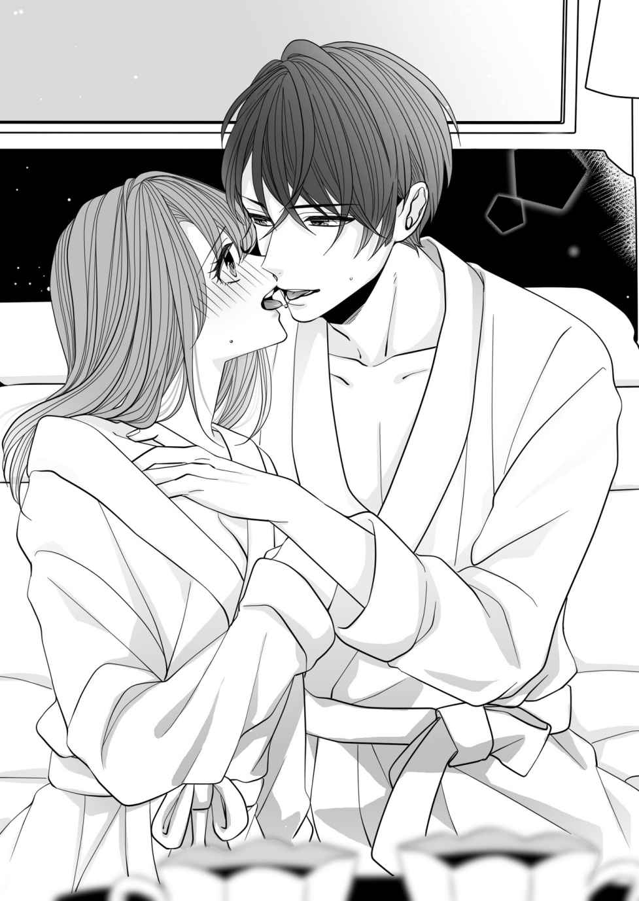
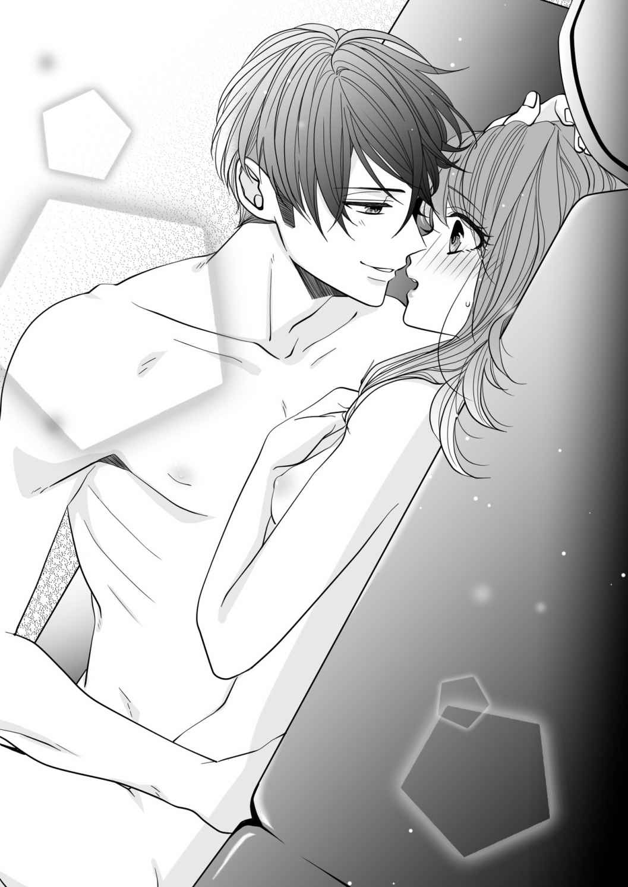
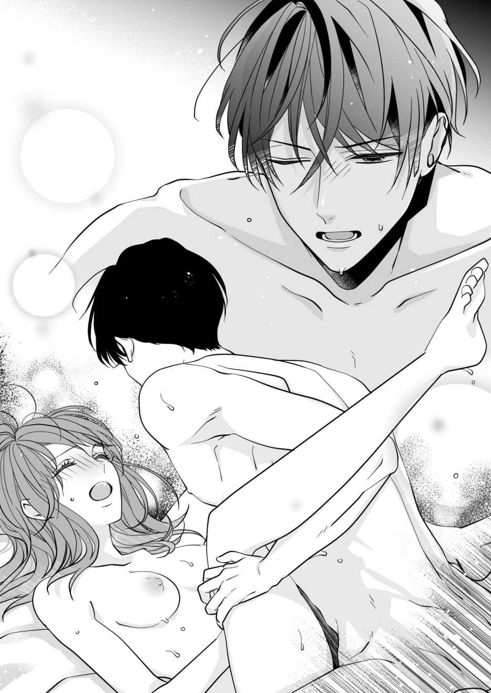

| 27歳、処女、初恋だった副社長とついにその時が!? (LUNA文庫) | |
| 神埼 たわ | |
| 天海社／LUNA文庫 (2019) | |
27 歳、処女、初恋だった副社長とついにその時が!?
［著］神埼たわ
［イラスト］小島ちな
第一章 初恋の相手が、突然現れた！
「あ、いやん......だめ、ですよぉ......」
「いいじゃないか、キスだけ」
キキキ、キスだけ......!?
大手外資系グループ、ホテルフロンティアジャパンのフロンティア東京営業企画部に勤務する私、河瀬 千秋 は思わず息を止めた。
昨年春に企画した人気イベント、『さくらガーデンパーティー』の資料をもう一度読み返したくて資料室に籠もっていると、いきなり男女が乱入してきたからだ。
そのあとすぐに、
――チュ、ピチュッ......プチュ、クチュクチュ......。
などという生々しい水音が聞こえてきた。
どう、しよう......。
今さら資料室の奥に人がいるなんて、言えるはずがない。最悪のタイミングに、ひとりで頭を抱えてしまう。もう困惑するばかりで。
早く終わらないかな......。
とりあえず、ファイルを胸に抱えたまま彼らに背を向けた。
ダンボール箱が並んだスチール棚の間に素早くしゃがみ込み、身を隠してひたすら待つことに。
――しかし。
「おっぱいも、ちょっとだけ揉ませてよ」
お、おおおっ......!?
会話はエスカレートした。
「だーめ」
「なんでだよぉ」
「だってぇ......」
女性は拒んでいるが、男性はしつこい。なかなか諦めようとはしなかった。
「それなら制服の上から、軽く。ね、いいだろう？」
「じゃあ、ホントに少しだけよ」
のらりくらり断っていたのに、結局は許すらしい。おそらくただ焦らしていただけだ。
やがて、
「い、いやん......あんっ。き、気持ちいい......」
淫らな喘ぎ声が聞こえた。どうやら男性は、本当に彼女の胸を揉んでいるようだ。
「乳首、ツンと勃 ってきたね。感じてる？」
「あんっ、エッチね」
「ここは？」
「い、いい......っ」
嘘でしょう......？
その破廉恥なトークに、ますます身動きができなくなった。完全に固まったままだ。
――すると。
「あーっ、もう我慢できなくなってきた。ナミちゃんもこうしてモミモミしてたら、もっとしたくなるでしょう？」
って、なにを......!?
「ちょっとだけ、やろうよ」
こ、ここで......？
「やだ、大石 課長ったら。そんなにナミのことが好きなの......？」
お、大石課長......!?
女性はとんでもない名前を口にした――。
大石課長といえば、私の直属の上司。営業企画部長直下のプロジェクトリーダー、大石課長に違いない。だから、どこかで聞いたことのある声で。
でも今は、そんな推測に悩んでいる場合ではなかった。
確かめなくちゃ......。
私は背を向けてしゃがみ込んでいたスチール棚の奥から、顔だけをドアの方に向けた。首を伸ばして見てみると――。
やっぱり......。
やや小太りの四十代の前半。一見気さくそうに思えるが、実際のところはねちねちとした性格。かなり計算高かった。そのため裏のあだ名は、黒タヌキ。
なにより重要なことは、彼は既婚者で。しかも先月、二人目のお子さんが産まれたばかり。
奥様はホテルフロンティア東京の元フロント係。何度かお会いしたことがあるが、良妻賢母を絵に描いたような方。課長にはもったいなかった。
なのに、職場で不倫......!?
頭が混乱した。途端に、相手のナミちゃんという女性のことが気になってしまう。
彼女は白襟の付いた、当ホテルのベージュの制服を着ていた。ということは、客室係だ。二十七歳の私より、うーんと若く見えた。
顔に見覚えはなかったが、ナミちゃんという名前を手掛かりに調べ上げれば、すぐに身元は判明するだろう。
よし......！
などと、探偵にでもなったつもりでいると――二人はますますいやらしいことを始めたのだ。
「あぅん......だ、だめよ......」
ナミちゃんと濃厚なキスを続ける大石課長の手が、彼女の膝上丈のスカートの中へと潜り込んだ。内腿をいやらしくまさぐっている。
「どう？ ここ、感じるだろう？」
「やだっ、課長......そこに触らないで」
「よく言うよ、もうびしょびしょじゃないか......」
こともあろうか黒タヌキは資料室で、ナミちゃんの股間に触れているらしい。
「や、う......あ、あんっ......。感じちゃう......」
「俺もそそられるよ」
「あぅ......」
「ナミちゃんのせいで、ほら。ジュニアがこんなに大きいぞ」
「うわっ、ホント！」
「触って、慰めてくれ」
えっ、えええっ......!?
「これでいい？」
「お、おおおおっ......」
二人の息はハアハアと上がった。
とんでもなく卑猥なシチュエーションに、ごくりと生唾を飲むしかなかった。
心拍数がどんどんと上がっていく。全身がかあっと熱くなった。どうしていいのかわからないけど、とりあえずじっとするしかない。
ホントにホントに、どうしよう......。
私がこれほどの焦燥感にかられるのは――。
恥ずかしいけど今まで、男性とキスをしたこともなかった。年は二十七歳だけど、中身は中高生レベル。
高校生のときから大好きなアイドル歌手グループ、フラッシュの追っかけを始め、気が付いたらこの年齢になっていた。
さすがに近頃は仕事が忙しく、コンサートへも頻繁には行けないけど。長年の熱心なファン活動の末、リアルな男性との交際経験がない。
未だに両親と暮らしている、苦労知らずのひとり娘で――。
それでも世間的にはなんとかカッコをつけたくて、イケてるパンツスーツに、ちょっと無理をした七センチヒールを愛用していた。
背筋をピンと伸ばし、颯爽と歩くことを心掛けている。
髪はデキる女を意識して、オフィス風シニョンに。
食にファッション、お洒落なライフスタイルにインテリアなどなど。各方面への流行のアンテナを張り巡らせ、常に仕事には全力投球。
ときおり後輩から持ち込まれる恋愛相談にも、女性誌を読み漁り、なんとか知ったかぶりを続けていた。
自分にムチを打ち、理想に近いキャリア女子像を作り上げてきた見栄っ張りな私。誰が処女だと信じるだろう。
とにかくさっきから心臓がバクバクし、喉がカラカラなのは、こういうエッチなことを男性としたことがないから。
なのにどういうわけか、関係のない下半身が、さっきからモヤモヤと――。
「挿 れるよ」
「ここで？」
「もう限界だよ、ナミちゃん」
「でも誰か来たら、どうするの......？」
ままま、まさか......!?
いくらなにも知らない処女であっても、多少の知識くらいは。二人がこれからしようとすることに見当がついた。
「ちょっとだけ、十秒でいいから。お願い」
と、彼が無理にスカートの中の下着を下ろそうとしたとき、
「だったら、ショーツは取らないで」
ナミちゃんは言う。
「横にずらしてよ」
おかしな指示をした。
「だ、か、ら......こうしてショーツを横にずらして。で、そこから挿れればいいでしょう？」
「なるほど。こんな感じ？」
「え、あ......う、うん。あ、あぅ......大石課長の大きいのが、入ってくるぅ......」
資料室は、いかがわしい場所へと変わっていた。
「い、いいよ......ナミ、ちゃん......」
黒タヌキのいやらしい吐息交じりの声。
「なんだかこの、やり方......めちゃくちゃ、感じちゃう......」
「あ、ああ......」
「胸も一緒に、揉んでぇ......」
――やがて。
「だめ、もう......イ、イキ......そう......」
「ハア、ハア、ハア......お、俺も......イ、イクぅ......」
二人のクライマックスに、私の下半身までもが甘く疼き出した。
聞いてられない......。
そう思い、耳を塞ごうとしたとき、手に持っていたファイルをばさりと床に落としてしまう。
「誰だっ！」
いきなりの物音に、大石課長の怒鳴り声が響いた。
「え、あ......その......」
気まずそうに棚の後ろから顔を覗かせると――。
「きゃーっ！」
叫んだナミちゃんは、大慌てで資料室を出ていく。
「かかか、河瀬......？」
「すみま、せん......」
「すみませんじゃない！ ななな、なんだよ、お前。いつからそこにいる!? 」
課長は恐ろしい形相で睨んだ。
「だから......そ、それは......」
思いもよらず、不倫現場を私に見られてしまった課長。とんでもない秘密を握られてしまったのではないかと焦ったのか、
「河瀬、お前......覗き見するのが趣味なのか？」
大声を出した。
「まさか、違いますよ」
「じゃあどうして、そんなところに隠れてた!? 」
「隠れていたわけじゃ、なくて......たまたま資料を見ていたら、課長たちが入ってこられたというか......」
「だったら、なぜすぐに声をかけない？」
「そんな状況では」
「常習犯だな、やっぱり......」
人を犯人扱いした。
そして、
「俺の弱みを握ったつもりだろうが、そうはいかない。こっちにも考えがある」
「考えですか......？」
「どうせ男がいなくて寂しいからだろう。お前がエロババアだってこと、みんなに話してやる」
「言いがかりです」
黒タヌキは一方的に私を侮辱し続けた。
きっと動揺しているのだろう......。
そう思い、なんとか我慢しよう努めたが、さらなる課長からの挑発に、
「課長こそ、こんなことしていいんですか？ 確か下のお子さん、生まれたばかりですよね。家庭を壊すつもりですか!? 」
関係ないのに、いつしか彼を責めている。
「だいたい、職場で不倫だなんて不潔です！ ナミちゃんですか、さっきの人。客室係ですよね。奥様に言いつけますよ！」
脅しとも取られかねない物言い。おそらく私は同じ女性として、奥様に代わって不倫をする大石課長を懲らしめてやりたかった。
しかし黒タヌキは、反撃する。
「だったら、言いつけてみろよ！ もしそんなことしたら、お前もただでは済まないからな！」
最後にそう告げて、資料室を先に出た。
＊＊＊
たとえあのとき、課長が強く言ったとしても――きっとあとから、「さっきは俺が悪かった。ナミちゃんとは別れるから、どうか妻には内緒にしてほしい」と、謝ってくるものだと思っていた。
だけど、実際には――。
「なんだよ、河瀬。この企画書は。つまんねぇなあ」
「ですが、課長」
「却下！」
ひどいパワハラが始まった。
「お願いです、課長。私の企画書を正しく評価をしてください」
「それが、上司に向かって言う言葉か？ ったく、失礼な奴だ......」
大石課長は、呆れたように息を吐く。本当に、罪の意識の欠片もないようだ。
しかも一番前のデスクにでんと座り、八名いる営業企画部のメンバー全員に聞こえるように告げられたら、まるで私が無能みたいだ。
私たちは利益の向上と集客を目的に、ホテルの年間行事に合わせて、さまざまなイベントを企画実行していた。
大石課長の上には営業企画部長という役職があって、常務が兼任しているが、それは名ばかりで。すべては黒タヌキに一任されている。
彼に睨まれたら、ここでは仕事ができない。もう二度と、私の企画が採用されることはないだろう。
――それでも。
「ですが、課長。この前提出した六月のウェディング企画では、私が考えた、結婚式と披露宴を本格的な写真集にしてプレゼントするというアイデアがいいとおっしゃってくださいました」
「俺が？」
「詳細をまとめてこいとのお話でしたので、こちらにご用意しました。見てください。部数が少なくても、限られた費用で本格的な写真集に仕上がるんです。オンデマンド印刷の資料も、ここに詳しく......」
と、目の前に差し出したのだが――。
「寝ぼけてんじゃない」
「えっ？」
「俺がいつ、お前の企画を採用すると言った？」
「でも、確かに......」
そう、前回は企画書を見せたらすぐに、「これなら、引き出物にしたいという要望があるかもしれない。期待できそうだ」と評価し、「よし、これで進めよう」と、ゴーサインをもらったはず。
「いつまでそこに、突っ立ってるんだ？」
「あの」
「話が済んだなら、席に戻れ。こっちは忙しいんだ」
我慢よ、我慢......。
外国の資本が入っているホテルフロンティアジャパン。基本的に能力主義なので、待っていればまたいつかチャンスが巡ってくるかもしれない。
必死にそう思い、怒りにも似た理不尽な感情を、なんとか静めることにした。
＊＊＊
ところが、その翌日――。
「うわっ、本当ですか？ ありがとうございます、課長！ 頑張ります！」
大石課長に呼ばれたひとつ下の後輩、安田 佳織 さんの嬉しそうな声が聞こえてくる。
「どうしたの？ なにかいいことでも？」
と、席に戻ってきた彼女に尋ねてみると――。
「私の書いた企画書が、採用されたんです。入社して、初めてですよ。六月のウェディングイベントの企画、任せてもらえました」
「ウェディングイベントの企画......？」
「はい」
「よかったわね......」
その彼女の朗報に、若干顔を引きつらせながら、祝福する。
「河瀬さん、これからいろいろ教えてくださいね」
「え、あ......うん」
くっきりした目鼻立ちに、栗色のロングヘアーの巻き髪。ふわりとした明るめのＡラインのワンピースがよく似合っている。
全身を毎日ブランド品で固めている安田さんは、英語だけでなくドイツ語も堪能だった。かなりの美人。
詳しくは知らないが、コネ入社したどこかのお嬢様らしい。
だけど本人はさっぱりした性格で、私のように仕事に執着することはなかった。あまり欲がないらしい。あくまでここは、結婚までの腰かけのようだ。
だからこれまで、彼女の企画書が採用されたことはなかった。いつも私のアシストをしてくれている。
でも自分の企画が動き出すのは、やはり嬉しいようで――。
「あの、それで河瀬さん。ちょっとお願いが......」
「なに？」
「河瀬さんってこの前、オンデマンド出版について、調べていましたよね」
安田さんが聞いた。
「うん」
「課長が言うには、私の企画に加え、そのオンデマンド出版で作った結婚式の写真集をプレゼントしたらどうかって......」
「オンデマンド出版の写真集......？」
それは紛れもなく私が考え、黒タヌキに提案した企画。
「なにか参考になる資料のようなものを、見せてもらえると助かるんですが......」
「あ......わ、わかった......」
そのとき視界に、オフィスを出ていく課長の姿が映る。
「でも、ごめん。ちょっと、あとでいい？」
私は黒タヌキを追いかけ、廊下に出た。
「課長！ 大石課長！」
後ろから声をかけたが、彼はわざと聞こえない振りをしているのか。そそくさと廊下を歩いていく。
それでも先へと回り込み、足を止めさせた。
「今忙しい。あとにしてくれ」
課長は私を振り切ろうとしたが、
「ひどいじゃないですか、課長。オンデマンド出版による写真集の企画、却下しましたよね。なのにどうして、安田さんがやるんですか？」
「だから、それはだな......」
「考えたのは、私ですよ 盗むつもりですか？」
必死に訴えた。
しかし、
「偉そうに。あんなの、誰でも思い付くことだ。それを自分の企画だと言い張るとは......ったく、呆れるな」
「はっ......？」
「俺を脅してまで、出世がしたいのか？」
「というか、課長。これはれっきとしたパワハラですよ」
などと私たちが廊下で、押し問答を続けていると――。
「ずいぶん物騒ですね。盗むだの、脅すだの」
背後から男性の声が近づいてきた。
「申し訳ございません！」
黒タヌキが即座に頭を下げる。どうやら偉い人が来たらしい。
そこで私も振り返り、
「申し訳ございま......」
と、すぐに謝罪をしようとしたのだが――。
年齢は三十代の前半だろうか。高級イタリアブランドの革靴を履き、光沢のあるグレーのビジネススーツを身に付けている。センスがいい。
そして改めて、足元を見ていた視線を上げると――。
翔太朗 お兄ちゃん......!?
そのハンサムな面立ちには、見覚えがあった。いや、見覚えがあるという程度ではない。私の目はたちまち釘付けにされたのだ。
信じられない......。
切れ長の目元に筋の通った鼻、引き締まった唇。さらりとした前髪が、額にかかっている。昔から頭がよくて知的な印象、だけど優しくて、スポーツが万能だった。
そう、目の前にいたのは、これまで忘れたことがない初恋の相手、隣に住んでいた楠木 翔太朗お兄ちゃんだ。
十五年振りだけど、面影は昔のまま。年齢を重ねて大人になった分、より一層カッコよくなっている。
うわぁ......。
家族で渡米して以来、会うのは初めて。こんな奇跡のような再会が、あっていいのだろうか。
だからすぐに、
「私のこと、覚えてませんか？」
ストレートに尋ねた。
だけど、
「どこかでお会いしました？」
翔太朗お兄ちゃんからは塩対応。
「え......」
ショック、かも......。
楠木家が住んでいた豪邸を処分し、アメリカに渡ったのは彼が高校二年のとき。当時小学六年生だった隣に住む女の子のことなど、覚えてないのかもしれない。
でも......。
そしてたとえ不倫はしていても、要領だけは抜群の黒タヌキ。
「申し訳ございません。部下がおかしなことを言いまして。これでは流行らないナンパのようですね、ハハハハハッ。ホントにすみません、楠木副社長......」
と、私をイカれた女に仕立て上げた。
「ふ、副社長......!? 」
「そうお呼びしてもいいですよね、間もなく就任されるんですから」
そう告げた課長の言葉に、
「ええっ？」
ただただ驚くしかなかった。
ニューヨークから戻り、十五年振りに再会した彼は、三十二歳の若さで日本にある十五のホテルを統括する、ホテルフロンティアジャパンの副社長になっていた。
「嘘、みたい......」
と、まったく手の届かないところまで上り詰めた翔太朗お兄ちゃんを、いつまでもぼんやり見つめていると――。
「河瀬さん、ご挨拶！」
苛立ったように大石課長が命じた。
「あ、はい。営業企画部の河瀬千秋と申します。どうぞよろしくお願いいたします」
と、自己紹介をすると、
「河瀬千秋、さん......？」
彼は一瞬眉間に小さな皺を寄せたが、
「本当にいい企画なら、周囲が引き上げてくれるはずです。今後は自分の実力で、挑戦してください」
注意のような、激励のような言葉をかけられる。というより、まるで私が黒タヌキを脅し、企画を通そうとしていたようだ。
ひどい、なにも知らないくせに......。
一方的に大石課長を信じる翔太朗お兄ちゃんに、心底がっかりした。百年の恋が一瞬で覚めるとは、まさにこのことだ。
――とはいえ。
副社長にまで盾突き、万が一営業企画部から他の部署や、他の拠点に異動させられたら大事だ。
今後もホテルフロンティア東京で働きたかった。この場を収めるためには、頭を下げるしかないだろう。
「ご忠告、ありがとうございました。お騒がせして、すみませんでした......」
私は謝罪した。企画を横取りされたのは、間違いなくこちらなのに。
「では」
そして部下たちの揉め事を収めた翔太朗お兄ちゃんは、晴れ晴れとした顔で先に廊下を歩いていく。
なによ......。
だけどすべてを暴露し、大石課長の家庭を壊すわけにもいかなかった。このまま永遠に真実を葬り、私がパワハラを受け続けるしかないようだ。
これまで本当に、仕事が楽しかったのに......。
吐き出すことのできない怒りが、湧き上がった。きっと副社長が、翔太朗お兄ちゃんだったからだ。
はあ......。
大きな溜め息をつくしかなかった。
第二章 恋愛と仕事、どちらを優先するべきですか？
翔太朗お兄ちゃんに、正体を明かさなくて本当によかった――。
私は心からそう思っていた。
単に懐かしさから話しかけても、向こうは絶対にそう捉えない。副社長に取り入り、企画書を通そうとしていると考えるだろう。
また話したところで、どうせお兄ちゃんは覚えてもいない。うっすら記憶が残っていても、警戒されるのが関の山だった。
アイドル歌手グループ、フラッシュの追いかけに青春のすべてを費やし、未だにリアルな男性と付き合ったことがない。
もしやこれは、アメリカに引っ越した翔太朗お兄ちゃんが忘れられないからなのかもしれない――と、悩んだこともあったけど。
いずれにしてもそんなバカな思い込みは、今日で払拭された。いつまでもウジウジしているわけにはいかない。
気持ちを切り替えることに――。
企画書の件は頭に来たが、少なくとも自分の実力を図るためのバロメーターにはなる。
企画が通ったと、安田さんは喜んでいるし。オンデマンド出版で作った写真集をプレゼントするというアイデアが活かされることに変わりはなかった。
うん、今回は休息すると思って、徹底的に補佐に回ろう......。
長い間心に秘めていた初恋にきっぱりと終止符を打った私は、明日から新たに、出発することにした。
＊＊＊
だけどその後も、大石課長からの陰険なパワハラは続き――。
もうこうなったらナミちゃんを見つけ出し、課長に逆襲してやるしかない！
などと、ちょっと過激なことを思い付いたりもしたが。
我慢、我慢......。
これ以上黒タヌキを刺激するのは、得策ではなかった。波風を立てず、平和に。時が流れるのを静かに待つ方がいいだろう。
それに今は自分のことより、長らく業績が落ち込んでいるホテルフロンティア東京のことを一番に考えるべきだ。
そう思い、安田さんが企画したウェディングイベントを成功させるため、毎日忙しく動き回っていたのだが――。
いきなり副社長から呼び出される。
えっ......な、なに......？
悪い予感しかなかった。
私を警戒した黒タヌキが、副社長になんらかの小細工を仕掛けたのではないだろうか。他の部署に異動させるとか？
それとも地方への転勤......？
もし東京を離れることになったら、ひとり娘の私に両親は、間違いなく別の会社への転職を勧めてくるだろう。
どうしよう......。
こうなったら、本当のことを話すしかなかった。そもそも不倫している黒タヌキが悪いのだ。自業自得。
でも......。
頭の中で、さまざまな思いが錯綜した。
困惑しながらも私は、初めて翔太朗お兄ちゃんがいる副社長室を訪れた。
＊＊＊
――トントン。
副社長室のドアをノックして入ると、スタイル抜群の美人秘書が出迎えてくれる。
「営業企画部の河瀬です。お呼びだというので......」
「お待ちしておりました」
秘書はすぐに、翔太朗お兄ちゃんがいるだろう個室のドアをノックする。
「副社長、河瀬さんがお見えになりました......」
初めて足を踏み入れた副社長室の大きな木製デスクの後ろには、高価な有名画家の風景画が飾られている。
確か、あれは......。
洋書がぎっしりと詰まった書棚の隣には、クローゼット。床には毛足の短い絨毯が敷かれ、壁にはモダンな間接照明。部屋の中央には黒革のソファーセットが置かれている。
長身の彼は本日、モスグリーンのビジネススーツをセンスよく着こなし、腕には何百万もするという高級ブランド時計。
優雅なこの空間にすっかり馴染んでいる翔太朗お兄ちゃんに、どこか気後れしてしまう。
そして初恋の相手であるイケメン副社長と二人きりだというのに、なぜか不思議とときめかなかった。
「河瀬ですが、お呼びだと伺って......」
「まあ、座って」
ソファーを勧められた。
「先日は廊下で、恥ずかしいところをお見せしてしまい......」
と、まずは謝罪から入ろうとしていると――。
「コーヒーでいい？」
「えっ......？」
翔太朗お兄ちゃんは爽やかな笑顔で聞いた。
「あ、はい......」
きょとんとして答えると、
「コーヒーを二つ」
彼は内線で部屋の外にいる秘書にオーダーする。
......？
いきなり副社長へ呼ばれ、コーヒーまで。厳しい話を持ち出す前に、なごませようとしているのか。
怖い......。
「河瀬さんは、今年で入社何年目なの？」
「五年目、ですが......」
「営業企画部の仕事は、おもしろい？」
「あ、はい。まあ......」
この先、なにを言おうとしているのか。公開処刑を待っているようで、恐ろしかった。緊張で喉がカラカラだ。
もしや彼が今から伝えようとしているのは、営業企画部から他の部署への異動とか、地方への転勤などという生易しいものではなく、解雇ではないだろうか。
そんな......。
もうこうなったら、真実を打ち明けるしかない――。
「あの、副社長。この前の企画書の話ですが......」
と、私が意を決して話し始めると、
「実はそのことで、今日は来てもらった......」
予想は的中のようだ。
「ですから、違うんです！」
先に大きな声を出した。
「私は、大石課長を脅して企画を通そうとしたわけではありません。だから、つまり......ちょっとした事情がありまして......」
必死に告げると、
「らしいね」
「えっ......？」
「それで君に、きちんと謝りたかった」
「は......？」
「オンデマンド出版で写真集を作る企画、もともと君のアイデアだったそうだね。すまなかった、誤解して。どうか許してほしい......」
男らしく頭を下げる。
「頭を上げてください、副社長。それより......」
どうして翔太朗お兄ちゃんが、大石課長とナミちゃんの不倫を知っているのか。黒タヌキが自ら、秘密を暴露するとは思えないし。
だとしたら、彼の情報収集能力は大したもの。
――だけど。
「六月のウェディングプランを担当する安田さんから、聞いたんだ。彼女に企画の説明を求めたところ、曖昧だったので、どういうことかと尋ねたら......」
安田さんが、オンデマンド出版の資料を私から受け取ったと話したようだ。
「よく見ると、資料作成者の名前も君になっていたしね」
「はあ」
「そこで、これまでの経歴や仕事振りを確認させてもらった。とても大石課長に無理強いをして、企画を通すような人には思えない」
「わかっていただけて、光栄です」
「調べもしないで、一方的に君が悪いと決め付けて、申し訳なかった」
彼はふたたび謝罪した。
「もう、どうか......本当に、なんとも思っていませんから......」
私的にはまだちょっと根に持っていたが、とりあえずそう告げる。
すると、
「なぜこんなことになったんだ？」
「えっ？」
「大石課長はどうして、君の企画を別の人間に担当させる？」
「そ、それは......」
誤解が解かれたなら、今さら黒タヌキの不倫を暴露する必要もない。私がいつまでも答えに迷っていると、
「今すぐ大石課長をここに呼び付け、君にウェディングプランを任せることもできるが......」
そんな提案をした。
「い、いえ。その必要はありません。後輩の安田さんが、初めて企画が採用されたと張り切っています。だからもういいんです。私も一緒に動いていますし、このまま彼女に任せましょう」
「本当に、いいのか？」
「ご配慮くださり、ありがとうございました」
と、私がにこやかに告げると、
「君は見所のある人材だ」
翔太朗お兄ちゃんはハンサムな笑みを浮かべた。
やっぱり彼はいい人だった。昔も今も、頭がよくて優しくて。
ふつうはどうでもいいことを隠したがるものだが、副社長にまでなったというのに、自らの過ちを素直に認め、謝ってくれた。
なんて、謙虚なんだろう......。
嬉しくなった。完全に消去したはずの彼への気持ちが、また復活しそうになる。
やがて秘書によって、コーヒーが運ばれてくると、
「今後のことだけど......」
「今後、ですか......？」
「河瀬さん、俺の下で働かないか？」
「え......？」
傾けていたコーヒーカップの手を止め、翔太朗お兄ちゃんを見つめた。
「あの、それはどういう......」
「このまま大石課長の下にいても、実力を発揮し辛いのではないかと思って。そこで秘書課に席を移し、秘書としての業務を行いながら、俺の下で企画案を練ってほしい」
「秘書ですか......」
「君の力が必要なんだ、河瀬さん」
「ですが......」
翔太朗お兄ちゃんがニューヨークから急遽日本に戻ってきたのは、業績が落ち込んでいるホテルフロンティアジャパンを短期間で立て直すためだ。
「もし実現できなければ、名前を変えて、他のホテルチェーンへ売却されるだろう。もちろん大規模なリストラも......」
「本当ですか......!? 」
私は目を見開いた。
たとえ無駄なコストを削減しても、それは一時しのぎに過ぎない。サービスの低下にも繋がる。根本的な解決策ではないだろう。
そこで彼は斬新な企画で集客を図り、収益を伸ばしていきたいという。
「そのためには、営業企画部の協力が不可欠なんだが......」
でも今回のことで、部の風通しの悪さを知ってしまった。大石課長への信頼も失ったらしい。
「とはいえ組織を一掃し、一から立て直している暇はなくて......」
私もできれば、翔太朗お兄ちゃんに協力したかった。
うっとうしいパワハラを仕掛けてくる黒タヌキとは縁を切り、実力を認めてくれる翔太朗お兄ちゃんの下で働きたい。
だけど安田さんが初めて担当することになった、六月のウェディングプランはもう動き出している。私が抜けたら、大変なことになるだろう。
それに秘書の仕事を一から覚え、兼務するなんて。両方とも中途半端になりそうで。
「すみません、やはり今から秘書課に異動するというのは、ちょっと......」
「......」
「副社長は私のことを、買いかぶっておられます。残念ながら、そんなに器用な人間ではありません」
「しかし」
「それでは......籍はこのまま営業企画部に置き、企画書だけを見ていただくのはどうでしょうか？」
折衷案を提示した。
「企画書だけ？」
「いずれにしても実際に企画を現場で動かすのは、営業企画部です。私も自分が考えたものに、最後まで責任を持ちたいですし」
――すると。
「わかった。ではそれで、やってみよう」
「はい」
「ただし、困ったことがあったら、すぐに言ってくれ」
「ありがとうございます。副社長のご期待に添えるよう、頑張ります」
今回話したことは、決定事項として、翔太朗お兄ちゃんから大石課長に通達してくれるという。私の後ろに副社長がいることを知れば、少しは態度も変わるだろう。
えっへん......。
どちらにしても今後は、黒タヌキを通すことなく、自分の企画が実現する。
やった......！
本当に嬉しかった。
＊＊＊
安田さんが担当する六月のウェディングプランを手伝いながら、夏に向けて企画をいくつか考えていた。約束通り、副社長である翔太朗お兄ちゃんにメールで送る。
もしこの中によいものがあれば、黒タヌキに邪魔されることなく、正当に評価してもらえるはずだ。
ふう......。
人間って、簡単に変わらないというけれど、それは本当らしい。
彼と最後に会ったのは、十五年前。そのハンサムな笑顔も少しハスキーな低い声もすべて同じ。素敵な人のままだった。
そのうえ正しい目で人を判断し、やる気まで与えてくれる。間違った偏見を持たない。
私のことを覚えてくれてないのは、少し寂しいけど。それでも彼の役に立ちたかった。微力ながら、できることはなんでも協力したい。
そう思っていると、翔太朗お兄ちゃんからの返信メールが届いた。
『河瀬さんの企画書を読ませてもらいました。どれもなかなかいいですね。よかったら今夜、食事をしながら打ち合わせをしませんか？ 予定はどうですか？』
えっ、あ......しょ、食事......？
副社長と食事をしながらの、打ち合わせだなんて。私はいつの間に、こんなに偉くなってしまったのか。
と、冗談はさておき――もちろん彼氏いない歴二十七年の女に、今夜の予定などあるはずはなかった。
「はい、本日大丈夫です。よろしくお願いします」
少々浮き足立ちながら、返事を送る。
だけど......。
いくら企画書を個別に見てもらっているからといっても、平社員の私が個人的に副社長と食事をするのはやっぱり変。
誰かに目撃され、おかしな噂でも立てられたら、翔太朗お兄ちゃんの出世に響いてしまうだろう。
......。
ニューヨークからやってきた、仕事のできるイケメン副社長。爽やかで優しくて、気さくな性格。どこまでもカッコいいお兄ちゃんは、ホテルの女性スタッフの人気を独り占めにしていた。
誰もが彼を目で追い、ときには「きゃーっ」という歓声まであげる。まるでアイドルのような扱われ方だ。
結婚相手に対しての理想がめっぽう高い、あの安田さんでさえも、
「楠木副社長って、ホントに素敵ですよね。見ているだけで目の保養になります。もし結婚できたら、毎日ドキドキして暮らせそう」
「そう？」
「私、本気で狙っちゃおうかな......」
などと、目を潤ませながら言っていた。
みんなのそんな心情は、実際にアイドル歌手グループの追っかけを長年やっていた私にはよくわかる。
とはいえ一方では、すでに彼には恋人がいるという噂が。結婚しているんじゃないかとささやく人までいた。
翔太朗お兄ちゃん自身も女性との余計な憶測を避けたいのか、食事の待ち合わせには、ホテルフロンティア東京から離れた赤坂の一流ホテルのロビーを指定してくる。
だよね......。
突然職場で果たした、十五年振りの嬉しい再会。
でも恋しい幼馴染みは、まったく手の届かないところにいた。とにかく私は慎重に、ときめき出しそうになる気持ちを抑えるしかなかった。
＊＊＊
赤坂のホテルへは、別々のタクシーで向かう。
私より数分遅れで到着した翔太朗お兄ちゃんは、ロビーの椅子に腰かけることなく、
「ミッシェル・トロワに予約を入れてある。行こう」
そう告げた。
「ミッシェル・トロワに、ですか......!? 」
それはホテルウーマンである我々が常に意識している、このホテルにある人気の最高級フレンチレストラン。
以前から一度行ってみたいと思っていたが、予約が一年先まで詰まっている。
「うわぁ......」
そのミッシェル・トロワを味わえるなんて。店内の雰囲気やレストランスタッフの動きも観察でき、勉強にもなるだろう。
と、単純な私は、素直に喜んでしまったけど。
この店の予約が、すぐに取れるはずはなかった。偶然空席ができ、連れてこられただけだろう。
きっと誰かの代役。誘われたのも、今日だったし。恋人と行く予定が、なにかの都合でキャンセルになったのだ。
浮き足立った気分が、途端に沈んでしまう......。
これは企画書の打ち合わせをするための、単なる仕事でしかない。にもかかわらず、なにをそんなに期待していたのか。
自分が情けなかった。すべてが繋がると、がくりと肩を落としてしまう。
静かなクラシックが流れるムードあふれる店内。キャンドルライトが揺れるテーブルに案内されると、ウエイターがまずは私の椅子を引いた。
「ありがとう......」
それでも翔太朗お兄ちゃんと、向かい合って腰かけるとさすがに固くなった。まるでお見合いの席のようで。
これは、仕事だって......。
「シェフが勧めるコースと、料理に合うワインでいい？」
「あ、はい。ですが......」
「ん？」
「仕事の打ち合わせをするのに、アルコールをいただいてもいいのでしょうか」
と、常識的な質問を投げかけると、
「確かに今日は仕事だが、君にはいろいろと不愉快な思いをさせてしまった。そのお詫びも兼ねてだから、よかったら飲んで」
「......」
「それにこれほどの料理を味わうのに、ワインを嗜まないわけにはいかないだろう？」
彼はごもっともな意見とともに、心を打ち抜くような爽やかスマイルを見せた。
やっぱり、カッコいい......。
やがて食事が運ばれてきて、ワインがほどよく進むと、緊張も解けてくる。
私たちは食事をしながら、彼が一番興味を示したナイトプールの企画について、しばらく話をしていたのだが――。
「ところで副社長って、ご結婚されているんですか？」
プライベートなことを聞いていた。
「えっ？」
公私混同もはなはだしい――。
彼の表情から、そんなワードが読み取れたけど、アルコールの効能は恐ろしい。私から完全に判断力を奪い取っている。
しかも、
「ホテルのスタッフ、とくに女性たちがみんな、知りたがっているんです。ただ私が代表して、インタビューしてるだけで」
「そう」
「だから早く！ 答えてください、副社長！」
「......」
実はお酒がそれほど強いわけではなかった。ビールなど、アルコール度数の低いものなら、ここまでにはならなかったはずだが――飲んでいたのはワイン。
さっぱりと芳醇な香りがする白ワインのあとには、子牛のグリエに合う赤を勧められ、つい手を出していた。飲むのが礼儀だと思ったからだ。
そのうえ緊張していたのか、やけにアルコールの回りが速い。
グラスに注がれ、勧められるまま飲み続けていたら、ずいぶん酔っていた。
しかし、
「今の質問は、少し寂しいね」
翔太朗お兄ちゃんが言った。
「どういう意味ですか？」
目が座り出した私が答える。
「だから......知りたいのがスタッフであって、君ではないように聞こえたから」
「うわっ、副社長って、遊び人～っ」
「えっ？」
「ごめんなさい。本当のことを言っちゃいましたね」
「......」
「あっ、もちろん私も知りたいですよ。教えてくださーいっ！」
また変な調子で尋ねると、
「俺は独身だよ」
クールに話した。
「だったら恋人は？ 恋人は何人いるんですか？」
「何人......？」
「答えてくれるまで、帰りませんよ」
「は......？」
「教えてください。何人ですか？ 今度は本当に、私が知りたいんです......」
けれどそのふざけた質問に気分をかなり害したのか、
「ノーコメント」
呆れたふうに言った。
「そ、そうですか......」
女性誌の受け売りではあるが、こうしたシチュエーションでノーコメントと答えた場合、ほぼほぼ恋人がいるらしい。
男性というのはずるい生き物で、より多くの女性からモテたがるそうだ。だから結婚していても恋人がいても、なかなか認めないという。
「案外ケチなんですね、副社長って。なにも隠さなくたって......」
とはいえ、私のコメントも失礼極まりなかった。お酒の席でなかったら、許されないこと。
言い訳すると、普段は絶対にこんなミスはしないはずで――。
「ご馳走様でした......」
そして食事が終わり、フレンチレストランを出ると、今度はなぜか自分がどれほど仕事熱心であるのかをアピールしたくなった。
以前隣に住んでいた私、当時小学六年生だった千秋は、こんなに立派になりました、毎日頑張っているのだと。
「ナイトプールの企画で、ぜひ副社長にお見せしたいものがこのホテルにあるんです」
「見せたいもの？」
「はい、屋外プールです。せっかくですので、行きませんか？ かなり参考になると思います」
と、私が言った瞬間、彼が自身の腕時計をちらりと確認した。
通常モードのときなら、そんな動作から相手がなにを考えているのか、見逃すことはなかったのだが――残念ながら酔っている。
「せっかくだから、ちょっとだけ。ね、プールに行きましょうよぉ」
「しかし」
「仕事のためです。早く行きましょう。こっちですよーっ」
自分でも嫌になるほどしつこかった。
「......」
それでも翔太朗お兄ちゃんは、部下の頼みを無視することなく、屋外プールへと付き合ってくれた。
＊＊＊
彼の腕をぐいぐいと引っ張り、無理やり連れてきた夜のプールサイド。水は張られているがまだプール開きの前で、もちろん誰もいない。
現在は部屋の窓から観賞できるよう、水中から美しくライトアップされていた。
そして私はまたここで、企画の主旨を大声で説明し始める。
「ナイトプールの企画を成功させるには......大人の遊び場というコンセプトを、絶対に外してはなりません。そうですよね、副社長」
「ああ、そうだ」
「光で水面を飾ることも、重要で......」
と熱弁を振るっていたのだが――。
「え、あ......う、うわっ......きゃあーーっ！」
なぜか突然足がもつれていた。
――ドボンッ......。
冷たいプールに落ちてしまう。
ブクブクブク......。
基本的に、運動は苦手。とくに泳ぎは小さい頃から全然ダメで。バタ足がようやくできる程度。
それでもアルコールが入ってなかったら、ここが足の立つ深さだと気付けたはずだ。
「きゃ......う、わっ......た、助け......てぇ......っ」
なぜか溺れてしまっている。
初めは呆れた笑みで傍観していた翔太朗お兄ちゃんだったが、さすがにこの浅いプールで本気で溺れているとわかったのか。
――バシャン！
スーツの上着を脱ぎ、プールに飛び込んだ。溺れている私を助けてくれる。すぐにプールサイドへと引き上げられた。
「大丈夫か？」
「あ、はい......」
「びっくりしたよ」
「すみま、せん......」
冷たい水を全身に浴び、私はようやく正気に戻っていた。アルコールの成分が一気に吹き飛んでしまう。
もちろんすぐに謝罪したが、どうやらこのままでは済まなくなっていた。騒ぎに気付いた同業者、つまりこのホテルのスタッフが、大慌てにこちらにやってくる。
しかも、
あっ......！
前がぱかっと開いた紺のパンツスーツの上着の内側には、襟のない丸首の白のブラウスを身に付けていた。
今日に限って、ブラの色が濃いピンク。それがくっきりと濡れたブラウス越しに映っている。
どどど、どうしよう......。
「さささ、寒い......」
私はそう呟き、スーツの前を両手で掻き合わせた。そのあとは恥ずかしさのあまり、寝た振りを決行するしかない。
「河瀬さん、どうした？ 大丈夫か？」
そんな嘘に翔太朗お兄ちゃんは心配したが、一度瞑った目を簡単に開けるわけにはいかない。
すると彼はやってきたホテルスタッフに、
「部屋を用意してください」
そう頼んだあと、私を抱き上げ、その部屋へと運んだのだ。
第三章 今夜、バージンを喪失します
キングサイズのベッドがあるダブルベッドルームに、翔太朗お兄ちゃんは濡れたままの私を無造作に置いた。
え......。
ホテルの部屋に、若い男女が二人。いわゆる密室だ。しかも私は今、大きなベッドの上に横たわっている。
まさかこのまま、彼が覆い被さってくるの......？
と、一瞬警戒したけれど――。
バスルームからバスタオルを持ってきた翔太朗お兄ちゃんは、寝ていた私にぽんとそれを投げた。
そして、
「起きているんだろ？ 早く身体を拭かないと、風邪引くぞ」
どうやらすべてバレていたらしい。
「すみま、せん......」
ベッドの上で恥ずかしそうに上半身を起こすと、翔太朗お兄ちゃんは私のシニョンをばさりと解く。バスタオルを奪い取り、濡れた髪をゴシゴシ拭いた。
「あ、の」
「ったく、千秋は......いったいいつになったら、大人になるんだ？」
「ち、千秋......？」
その言葉に驚いた私が、彼を見つめると――。
「元気だったか？」
「じゃあ......」
「十五年振りだな。こんな偶然って、ホントにあるんだな」
と、ハンサムに微笑んだ。
「ねえ、いつ？ いつ私だって、わかったの？ この前、副社長室に呼んだとき？」
逸る心で弾丸のように尋ねると、
「廊下で名前を聞いたとき、もしやと思ったんだ。だけど千秋が、あまりに綺麗になっていて。自信がなかったから、あとでお前の履歴書を調べたよ......」
お兄ちゃんは答えた。
「だったら、特別に企画書を見てくれるというのは......？」
私が隣に住んでいた千秋だと知り、ひいきをしてくれたのかもしれない。だとしたら、悲しかった。実力が認められたわけではないからだ。
しかし、
「心配するな。基本的に俺は、公私混同しない主義だ。ただお前の実力を買っただけで」
「ホントに？」
「ああ」
彼は微笑む。
「とりあえず、話はあとだ。まずは濡れた服を着替えよう。俺もお陰でびしょ濡れだし」
「うん......」
私が先にバスルームを使うことになった。
ホテルが用意してくれたバスローブに着替え、着ていた洋服はクリーニングバッグに入れる。ホテルのクリーニングサービスを頼むことに。
とはいえ、ブラとショーツまでをクリーニングに出すのは、さすがに躊躇われた。そこでバスルームにあったドライヤーで、急いで乾かすことに。
半渇きではあったが、まあそこそこ大丈夫。下着はバスローブの下に身に付けて、パンツスーツとブラウスだけをクリーニングバッグに入れた。
もし身体が冷えているなら、シャワーを使えばいいと翔太朗お兄ちゃんは言ってくれたけど。彼をこれ以上待たせるわけにはいかない。
服を入れたクリーニングバッグを持ち、バスローブ姿で外へ出る。
「お待たせしました。バスルームを......」
と交代して中に入ってもらうつもりが――翔太朗お兄ちゃんはすでに部屋で、着替えを済ませている。同じように、バスローブ姿になっていた。
クリーニングバッグを彼に渡すと、ハウスキーパーを呼んだ。二人分を預けてくれたのだ。
「あとは待つだけだ」
一時間ほどで、クリーニングが出来上がるという。
「迷惑をかけて、ホントにすみません。今日は少し、飲み過ぎました......」
「少し......？」
翔太朗お兄ちゃんはからかうように微笑んだ。
彼に、仕事のできるカッコいい女だというのを見せたかった。なのに酔っぱらって、プールに落ちるなんて。
最低......。
しかも一度も男性と付き合ったことがない私は、もちろんバスローブ姿を異性に見せたことがなかった。ホテルの部屋で二人きりというシチュエーションに、少々怯えている。
もし翔太朗お兄ちゃんが私の正体に気付いてなかったら、とてつもなく気まずい空気になっていただろう。
「ルームサービスで、コーヒーを頼んだから」
「ありがとう、ございます......」
「そんなところに立ってないで、ほら、こっち。座って」
彼は自分が腰かけていた、窓際の応接セットの椅子を私にも勧めた。
「じゃあ......」
戸惑いながら座ると、
「ご両親はお変わりない？」
お兄ちゃんが聞いた。
「あ、うん。元気です。父はもうすぐ定年で。お兄ちゃんの方は......？」
「五年前に、おふくろが病気で亡くなって......」
「えっ、おばさんが......？ そんな悲しいことが、あったなんて。ファイト、お兄ちゃん。元気、出してね」
励まし方が変だったのか、彼は苦笑いをし、
「もう大丈夫だ」
そう答えた。
「おじさんは？」
「オヤジは研究しながら、未だにボストンの大学で教鞭を執ってるよ」
「会いたいなあ、おじさんにも」
私が告げると、
「あの、ところで千秋」
「なに？」
「おばさんから、その......なにかうちのおふくろについて、聞いてないか？」
「たとえば......？」
翔太朗お兄ちゃんがなにかを言いかけたところで、部屋のベルが鳴った。
「はい」
返事をした彼は、
「ルームサービスが来たらしい」
そう教えてくれる。
ルームサービス......!?
だとしたら、部屋の中までホテルスタッフが入ってくる。男性の可能性もあった。今は下着の上に、バスローブを羽織っているだけで――。
た、大変......！
キングサイズのベッドの中に、とっさに避難した。頭ごと潜り込んでいる。
「ありがとう」
という彼の声のあと、ガラガラガラという車の付いたテーブルを押す音が聞こえた。
「なにしてる？」
「だって......こんな格好だし」
潜り込んだベッドの中から目だけを出すと、白いクロスがかかった車付きのテーブルに、コーヒーポットとカップが二脚、チョコレートが載った小さなお皿が置かれていた。
どうやら翔太朗お兄ちゃんがドア付近でスタッフからコーヒーを受け取り、中まで運んでくれたようだ。
「なんだ......」
安堵の息を吐くと、
「今でもシャイなんだな、千秋は。昔と変わってなくて、可愛いよ......」
そう言って、くすりと微笑む。
ホテルフロンティア東京では、いつもサービスを提供する側。サービスを受けるのは、意外にも慣れてはいない。
だから、気恥ずかしいというか――。
「ほら、冷めないうちに」
ベッドの上掛け布団が捲られる。
「......あ、うん」
完全に、子供扱い。とはいえ私も、そんな翔太朗お兄ちゃんに甘えているけど。
そして彼がポットから二人分のカップにコーヒーを注ぐと、部屋には香ばしい匂いが漂った。
それに誘われるように、ベッドから這い出てくる。コーヒーカップが置かれたテーブルの前、ベッドの端に腰かけた。
「いただき、ます......」
すると一瞬ベッドが、揺れる。応接セットに戻るだろうと考えていた翔太朗お兄ちゃんが、同じように座ったからだ。
今は二人ともバスローブ姿。見方によったら、どこかいやらしい。しかも彼は私の隣、かなり密着していた。
そして、
あ......っ！
バスローブの下に、ブラとショーツしか付けていないことを思い出した。ということは、ほぼ裸。
翔太朗お兄ちゃんのバスローブの下は、どうなっているのだろうか――。
ままま、まさか......!?
エッチな想像が、緊張をピークにする。
何度も言うけど、私はこういうことにまったく免疫がなかった。中学から大学まですべて女子校で、周りには男性がいない。二十七歳のくせに、精神年齢は中高生レベル。
とにかくこの場の雰囲気を、和らげなくては......。
そう思えば思うほど、どういうわけか焦っていた。話題を見つけられないまま、心臓の鼓動がドキドキと高鳴る。手には汗が滲んだ。
耐え切れなくなった私は、持っていたコーヒーカップをいったんテーブルに置いた。
「あの、だから......翔太朗お兄ちゃん」
「ん？」
「ごめんなさい、私とこんな場所にいて」
「こんな場所って？」
「もし誰かに見られたら......そう、恋人に見られたら、誤解されちゃいますよね」
気遣った振りをした。
すると彼も同じように手に持っていたコーヒーカップをテーブルに戻し、
「意味が、わからないが......」
姿勢を改める。
「だだだって......ホテルの部屋で、二人きりなんですよ。バスローブ姿で。誰かに見られたら、絶対に怪しまれます」
「そうだろうか」
「って、もしかして私のこと、女だと思ってないの......？」
目を見て話すと、彼は微笑んだ。
「思ってるさ。だから今、こんなにドキドキしてる......」
と、私の手を取り、自分の胸に当てた。
「えっ......」
そのパフォーマンスに、緊張は極限状態。こちらが慌てて手を引くと、
「誰かに見られることはないし、別に見られたとしても構わない。悪いことをしているわけではないんだから」
静かに言った。
「というより、千秋は......こうして俺と一緒にいるのが、嫌なのか？」
逆に尋ねてくる。
「嫌じゃ、ないけど......もうお互い子供じゃないんだし。私はただお兄ちゃんの恋人に誤解されないか、心配で......」
「恋人......？」
「彼女、いるんでしょ？ だってさっき聞いたとき、ノーコメントって答えたじゃない。否定しなかったということは......」
と、どこか大人ぶって告げると、翔太朗お兄ちゃんはいきなりチュッと唇を合わせてくる。
「う......」
「もしかして千秋、ヤキモチを焼いてる？」
「はい......？」
質問の主旨がわからなかった――。
というより......もしかして今のが、記念すべきファーストキスですかぁ......!?
そしてあり得ない唇の感触に、圧倒されていた。茫然としてしまう。
そんなとき、
「恋人はいない」
お兄ちゃんは断言する。
「え、あ......なんて？ う、嘘だよね」
「本当だ。千秋に嘘はつかない」
「あ......う、うん......」
「それより、キスの続きがしたいんだけど......いい？」
「え......」
バスローブを着た肩に、翔太朗お兄ちゃんの手がそっと置かれた。私は吸い込まれるように、こくりと頷いてしまう。
まだ確かめたいことは、たくさんあったけど。こうして熱い眼差しを向けられると、キスの続きがしてみたくなった。
もっともっと甘い感触を味わってみたい――。
彼との顔の間隔が、ゆっくりと縮んでいく。静かに目を閉じた。
あ......。
柔らかなモノが、そっと唇に振れる――。
初恋の人と結ばれる確率は、たったの一パーセントだという。
十五年間の空白ののち、翔太朗お兄ちゃんとは再会したばかり。今どこに住んでいるのか、なにを考えているのか。なにも知らなかった。
それでもぷっくりとした唇がお兄ちゃんに覆われ、艶めかしく吸われると、全身が悦びで震えてしまう。
「あ、う......っ」
上下の唇がソフトに啄まれた。何度も角度を変えて押し付けられるキスに、もう全身がメロメロだ。
気持ち、いい......。
男性の唇の感触が、こんなにもエロチックだったなんて、想像すらしなかった。
身体の芯がぞくぞくとざわめいていく。もしプールに落ちなかったら、彼とこうしてホテルの部屋で口づけを交わすことはなかっただろう。
セクシーな翔太朗お兄ちゃんの唇からは、切ない温もりが。このままでは本当に彼を好きになってしまいそうだ。
「柔らかいよ、千秋の唇......」
「え......」
もし気持ちを止めることができなかったら、どうすればいいのだろうか。
お兄ちゃんに恋人がいたら......？
それでも彼の淫らな舌先が、私を翻弄する。
唇の周りがくすぐるように舐められた。かと思うと、ぎゅっと強く押し付けられ、吸われていく。
「ん、うぅ......」
上唇と下唇を交互に食んだのだ。
「くっ......っ」
二十七歳で初めて体験したキスという男女の甘美な行為。心臓の鼓動は今にも破裂しそうで。バクバクと大きな音を立てている。
呼吸が小刻みに上がっていくのは、エッチな想像をしているせい......？
彼が私を好きかどうか、それさえもわからなかった。からかわれているだけかもしれない。
だけどもっと、したくなっている。
翔太朗お兄ちゃんは私の唇の隙間を強引にこじ開けたかと思うと、肉厚の舌を押し込んできた。
「ん、んんっ......！」
びくりと身体が反応する。
まるでソレが、生きたモノのようで。その生々しい感触に、大きく目を瞠るしかない。
「う、っ......」
それでも彼はぴちゃぴちゃと唾液を絡ませ、こちらの口腔を犯し続けた。肉厚の舌で、うねうねと淫らに掻き回していく。
「や......ぅ」
歯列がひとつひとつ、丁寧に舐められた。粘膜が卑猥にくすぐられると、もうすべてがどうでもよくなってしまう。
「んっ......あ、ぅ......」
くすぐったいような、恥ずかしいような。そんな夢心地の感覚――。
初めての男女の行為に、慣れてないだけかもしれない。だとしても、濃厚な大人のキスに深くのめり込んでしまう。
するとお兄ちゃんは、こちらがなにも知らない処女だとは思わなかったのか、
「キスが上手いね、千秋」
「えっ......？」
「いけない小悪魔だ......」
そう告げて、さらにそれを楽しんだ。
現在二十七歳の私。意識してイケてる女を演じてきたからか、遊んでいるふうに見えるのかもしれない。
それならそれで......。
本物のキスは、数多く見てきた映画の中のシーンとは違っていた。ものすごくドキドキし、ハートを打ち抜いていく。
「う、んぅ......」
翔太朗お兄ちゃんの強引な舌が、こちらの舌を搦め捕った。エッチなその感触に戸惑いつつも、一方では心を躍らせてしまう。
もっともっと、深く教えて......。
やがて心臓の鼓動が、マシンガンのように打ち始めた。呼吸はハアハアと、天井知らずに激しく上がっていく。
「や、あ......」
全身がかあっと熱くなった。正体不明の淫靡な電流が、全身を駆けていく。
下半身には、モヤモヤとしたいけない気配が。私は淫乱な女になってしまったのだろうか。
これは大石課長の不倫現場を目撃したときと、同じ感覚。だけどもちろん今の方が、悩ましい。脚と脚の間までが甘く切なく痺れている。
腰から崩れそうで、堪らなく破廉恥。どこかに下腹部を擦り付けたくなるほどで。
ショーツが濡れてる......？
しかし彼は戸惑う私に構うことなく、キスをさらに深くした。後頭部をぐっと引き寄せ、こちらの舌を自分の口の中へと吸い取ってしまう。
「う、ぐっ......」
お兄ちゃんの口腔で、初めての私が淫らに弄ばれた。
下半身には、モンモンとはしたない熱が集まり、いやらしく腰を動かしたくなってしまう。
「や、あ......」
激しく舌を絡ませてくる彼に負けないよう、わからないなりにこちらからも熱く応じた。
「千秋......」
名前を呼んでくれたことが、すごく嬉しい。このままなにをされてもよかった。もちろんベッドに押し倒され、キス以上のことだって。
そんな思いが伝わったのか、翔太朗お兄ちゃんの手がゆっくりと下りていく。頬から首へ、鎖骨を悩ましく滑った。

「んぅ......」
指先は、バスローブの襟をなぞり始める。やがて白いタオル地の上から、私の乳房に触れた。
「あ、ん......っ」
好きな男性から、受けた初めての性的行為。戸惑いながらも、それはなんとも気持ちいい。
抵抗せずに固まっていたためか、翔太朗お兄ちゃんは手のひらで豊かな膨らみを包んだ。やわやわと揉んでいく。
「や、ん......はぅ......」
呼吸がさらに上がった。腰の奥が、はしたなく疼いてしまう。
お兄ちゃんの手が動くたび、ブラの中にある突起が硬い布地に擦れた。敏感なピンクの先はすでに卑猥に勃ち上がっているだろう。
「ん、あ......んぅ......あ、うう......っ」
あまりに気持ちがよくて、思わず甘い声を洩らした。すると彼はもっと卑猥に、胸を揉み始める。
「や......ん、あ......っ」
下半身がぞくぞくした。いやらしく波打っている。
もしかして私たちは、生まれたときから結ばれる運命なのかもしれない――。
そうよ、翔太朗お兄ちゃんになら、すべてをあげても......。
そんな勝手な思い込みに襲われていると――バスローブの襟元から、内側に手を入れようとした彼がなぜか躊躇した。
「どうか、した......？」
「もしかして、下着を着けてるの？」
「え、あ......うん」
ブラを外してないことに、気が付いたらしい――。
あの時点で翔太朗お兄ちゃんは、上司の副社長でしかなかった。私のことを以前隣に住んでいた千秋だと、わかっているとは思わなかった。
恋愛経験がないため、男性の前でバスローブ姿になったことはない。だから本能的に、自分を守ってしまうのだ。
だけど、それが......。
二十七歳女子の固過ぎるガードに、彼は気を悪くしてしまったようだ。キスを突然やめてしまう。
「あの、だから......翔太朗お兄ちゃん」
説明をしようとしていると――部屋のチャイムが鳴った。
「はい」
返事をしたお兄ちゃんは、ベッドの端から立ち上がる。ドアを開けた。
「クリーニングをお持ちしました」
「ありがとう」
そんな会話が遠くから聞こえる。
ちょっとした誤解でキスを中断してしまったが、またこのあと続ければいい。
そう思っていたのだが――。
ハンガーに掛けられた二人分の洋服を持ち、ベッドまで戻ってきた彼は、ふたたび私の隣に腰かけることはなく――。
「着替えて、帰ろうか」
乾いた洋服を手渡した。
「え......？」
「遅くなると、ご両親が心配するだろう」
「そう、だよね......」
だけど小さなプライドが邪魔をし、それ以上なにも言えない――。
私は中高生ではなく、二十七歳のれっきとした大人。終電がなくなればタクシーで帰ることができたし、ここに泊まり、明日の朝まで一緒に過ごすこと。
それ、なのに......。
予想外の終わり方に、ショックを受けてしまう。
さっきの濃厚なキスは、遊びだったの......？
クリーニングされたパンツスーツとブラウスを持ち、バスルームへと入った。着替えて髪を整え、部屋へと戻ってくる。
帰りはひとり、タクシーに乗せられた。
「気を付けて」
「あ、うん」
「ご両親に、よろしく」
「......」
お酒を飲んだ翔太朗お兄ちゃんに、車で送ってくれとは言わないけど。なにもこんなにそそくさと追い返すことはないだろう。
はあ......。
しかも走り出したタクシーの中で身体を捻り、リアガラスから後ろを振り返ると、彼は私を見送ることなくすでに背を向けていた。
急いでホテルの中へ入っていく。
なんで......？
だけど、その理由を考える心の余裕はなく、ただひたすら虚しさと闘うしかなかった。
第四章 キスした意味を教えてください
昨日は上司と部下の関係を逸脱し、あんなすごいことをしたというのに――あのあと翔太朗お兄ちゃんからの連絡は、なにもなかった。
メールアドレスは互いにオフィス用しか知らせてないが、それでも携帯番号はわかっているはず。
副社長の彼はホテルでは偉い人かもしれないけど、昨日は幼馴染みとして再会した。部屋で二人きりになり、男と女になったのだ。
なのに、どういうこと......？
なんらかの連絡があってもいい。
プールに落ちて迷惑をかけたのはこちらだから、私からの電話を待っているの......？
翔太朗お兄ちゃんはその実力が認められ、ホテルフロンティアジャパンの副社長になっていた。仕事はできるし、そこまでいい加減な人だとは思えない。
つまり私は、女性として扱われてないとか......？
キスだって、彼にとってみれば単なる挨拶なのだろうか。
ただの悪戯に過ぎないの......？
気になることはたくさんあったけど、悔しくてこちらから尋ねることはできない。予想が的中するのが怖かった。
私はひとり、白黒をつけることができないグレーゾーンで、葛藤していた。考えれば考えるほど、悪い方へと向かってしまう。
......。
どちらかというと、気が長い方ではない。じっと待つのは苦手。でもこちらからアクションを起こしたくなった。
そこで私は仕事にかこつけて、さらに詳しく煮詰めた『ナイトプール』の企画書をオフィス用のアドレスに送ってみる。
――しかし。
待っても待っても、彼からの返信はなかった。
＊＊＊
元気が出ない......。
中途半端な状態を抜け出したくて、勇気を集めてメールをしたのに放置されたまま。
これをどう解釈すればいいのか――。
大勢の人に聞いたら、きっとみんなは私が振られたと判断するだろう。
そして廊下を歩いていると、
あっ、あの人は......。
翔太朗お兄ちゃんの秘書とすれ違う。こちらから会釈をすると、私を覚えてくれていたようだ。
「営業企画部の河瀬さんですよね」
声をかけられる。
「そう、です......」
すると秘書からは、
「副社長ですが、先週末から上海に出張されています。お送りいただいた企画書は、戻られてから検討されると思いますよ」
と、教えられた。
彼は先週末、つまりプールに落ちた翌日から、海外に出張しているらしい。だからあの夜、急いで私を帰したのだ。
しかも送ったメールは、本人ではなく秘書が受け取っていた。きっと企画書にはまだ目を通していない。それで返事が来ないのだろう――。
などと、自分の都合のいいように、一度は解釈したものの、やはりなにかが虚しかった。納得できない。
メールであれば、世界中どこでも受け取れるはず。電話だって。なのにどうして、秘書からわざわざ教えてもらうのか。
それも偶然会った廊下で。
......。
翔太朗お兄ちゃんは否定していたけど、やはり恋人がいるのだろう。だからキスしかできなかったので。
そもそもレストランで聞いたときは、ノーコメントだと答えていた。
部屋に入ってから急に変わったのは、私といい雰囲気になったから？ からかおうとして、思わず嘘をついてしまったのだろう。
ふう......。
翔太朗お兄ちゃんといい大石課長といい、みんな男はずるいのかもしれない。それは女性誌に書いてあった通りで。
だから妻や恋人がいても、平気で浮気ができるのだ。
それでもまだお兄ちゃんの方が、黒タヌキよりマシだ。私を最後まで奪うことをしなかったのだから――。
ようやく見えてきた真実に、長い息を吐いた。
いずれにしても、早く忘れた方がいい。騙された人間が、バカなのだ。そう、私が愚かだった。
彼に恋人がいてもいなくても、たとえ独身であってもなくても。しょせんこちらは平社員。ホテルフロンティアジャパンの副社長と付き合えるはずがない。
以前隣に住んでいたことで、多少の特別扱いはしてもらえても、女性としての未来まで与えてはくれないだろう。適当に遊ばれて、捨てられるだけ。
企画書を直接見てもらっただけで、ありがたいと感謝しよう。黒タヌキに冷遇されていたのを救ってくれたのだから。
......。
初めは腹が立って仕方なかったけど、こうして怒りが静まり始めたら、今度は無性に悲しくなった。
でもなんとか気持ちを立て直し、整理する努力をした。
＊＊＊
――それから一週間。
翔太朗お兄ちゃんが、出張先の上海から戻ってきた。本人から直接内線電話がかかってくる。副社長室に来るようにと。
「承知しました。すぐに伺います......」
私はデスクから立ち上がった。
よし......！
もう絶対に、騙されたりしない。彼のことは忘れよう。気持ちは揺らさないと決めていた。
そんな固い決心で副社長室を訪れると、秘書がすぐに個室に通してくれる。
以前と同様に中央の黒革のソファーを勧められ、彼がまた二人分のコーヒーを頼んでくれた。
そういえばホテルの部屋でも、コーヒーを飲みながら、キスしたっけ......。
切ない記憶が蘇ると、胸がズキズキと痛んだ。そしてそれらのすべてを否定するように、小さく首を左右に振る。
「連絡が今日になり、悪かった。次の日から、上海へ出張していたんだ」
翔太朗お兄ちゃんは言う。
「秘書の方から聞きました」
「企画書もやっと見たよ」
「そうですか、ありがとうございます......」
邪念を振り払い、淡々と話すのは大変だ。考えてみたらこの間、ずっと彼のことばかり考えている。
こんなに好きになっていたなんて......。
だからこそ、二人だけで話すのは苦しかった。
早く副社長室から出よう......。
「今回の企画書ですが、カップルをターゲットにした魅力的な宿泊プランを考えています。練り直す部分があれば、ご指示ください......」
と、私が早口でナイトプールの企画を説明すると、
「いいんじゃないか？ それで行こう」
即決。
「あ、はい......」
すんなり企画を通してもらえた。
「ありがとうございます。では、私はこれで......」
心のうちではもっと、翔太朗お兄ちゃんと話したかった。それでも勇気を出して立ち上がる。一歩横へ出て、会釈した。
――すると。
「待ってくれ、河瀬さん」
「なにかご用でしょうか......」
呼び止めた彼に無表情で聞くと、
「怒っているのか、千秋」
オフィスで千秋と、下の名前を呼んだ。
「どういう......」
私が惚けると、
「とりあえず、いったん座って」
「えっ......？」
「早く！」
命令口調で。
「は、はい......」
ふたたびソファーに腰かける。
そんな私を彼は怪訝な顔で見つめた。
「な、なんですか......？」
と、いうより......どうして翔太朗お兄ちゃんが偉そうにするの......？
文句を言いたいのは、こちらの方だった。キスして、バスローブの上からだけど胸まで触られて。そのあとは一週間放置。音信不通だったのだ。勝手過ぎる。
もし偶然廊下で彼の秘書に会わなかったら、海外に出張していることさえも知らなかった。
「言いたいことがあるなら、聞かせてくれ」
だけど、こういうときこそポーカーフェイスで。
「言いたいことですか？ とくには......あっ、お忙しい中、企画書に目を通していただき、ありがとうございました。感謝しています」
顔を引きつらせ、嘘を並べた。
「あの夜、先に返したからか？」
「はい......？」
翔太朗お兄ちゃんは人の話を聞かずに、直球を投げてくる。
「ち、違います」
「だったら？」
「......」
口ごもった私に、
「実は翌朝急に、上海へ発つことになって。時間がなかったんだ」
「だったらどうして、電話をくれなかったんです？ あんなふうに帰されて、連絡がなかったら、誰だってからかわれたと思います」
彼の挑発に乗り、ついつい本音を吐露した。
しかし、
「電話をしたら、すぐに切れないだろう。あの日は一睡もせずに仕事をし、上海行きの飛行機に乗ったんだ」
「上海には電話はないんですか？ 私からのメールは、見なかったの......!? 」
「......」
というより、どうしてこんなに熱くなっているんだろう。
きっと私は、大勢いる女性の中のひとり。大切に扱われてないことが、なによりの証拠だった。
「失礼します！」
ソファーから立ち上がり、翔太朗お兄ちゃんに背を向けると、
「待って、千秋。どうしたら許してくれる？」
彼が引き止める。
「どうしたらって......」
なぜここまで、私に固執するのかがわからない――。
「それならまず、キスをした理由を説明してください」
「えっ？」
「あのときの、キスの意味よ」
お兄ちゃんは、きょとんとした。キスした理由をイチイチ聞いてくる女は、彼の周りにはいないのかもしれない。
「そうだな......これといった理由は......ただお前が......」
と、話し始めたところで、秘書が頼んだコーヒーを運んでくる。
「いただき、ます......」
カップを手にすると、ヒートアップした気持ちが少し静まった。
どうして私はキスぐらいで、こんなに大騒ぎをしているのか。ここは職場で、彼は上司。軽く受け流し、仕事に戻るのがふつうだろう。
まるで、子供......。
そんな反省をしていると――。
「今夜、時間ない？」
翔太朗お兄ちゃんが聞いた。
「今夜、ですか？」
「会って、ゆっくり話がしたい」
「でも」
「実は今日、俺の誕生日なんだ......」
彼が私を見つめる。
「千秋と二人で、過ごしたい......というよりそれが、さっきの答えにならないだろうか」
「わかり、ました......」
『キスした理由』をきちんと聞くことなく、私は思わずこくりと首を縦に振った。
＊＊＊
あれほど翔太朗お兄ちゃんのことを忘れようと、強く決心したはずなのに。ポリシーがなにもないというか――弱い自分が本当に嫌になってしまう。
バカバカ、プライドはないの......？
とはいえ、誕生日を二人で過ごしたいと言ってくれた翔太朗お兄ちゃん。素直に嬉しかった。その相手が私でよかったと心から思えてしまう。
そうよ、いつまでも意地を張らないで......。
待ち合わせは、恵比寿カーデンプレイスの広場。また近くのレストランを予約してくれたのかもしれない。
いろいろあったけど、この前もご馳走になったわけだし。プールにも落ち、迷惑をかけていた。
今日は彼の誕生日でもあるし、お祝いとお詫びを兼ねて、今回のレストランは払わせてもらおう。
そしてもちろん、バースデープレゼントも用意することに。ホテルから待ち合わせ場所へと向かう途中、デパートに立ち寄った。
ありきたりではあるが、ネクタイを購入する。
翔太朗お兄ちゃんを思い浮かべ、綺麗なパープルに白のストライプが斜めに入ったものを選んだ。
うん、似合うかも......。
好きな人へのプレゼントを選ぶことが、こんなに楽しいなんて――。
あんなことがあって、なにもはっきりしてないのに。私はまた彼を信じている。
バカ......。
だけど正直な気持ちは、止められなかった。
カーデンプレイスの広場に到着したが、まだ翔太朗お兄ちゃんの姿はなかった。先に着いたら必ず電話をするように言われていたので、かけてみると。
「もしもし」
『千秋？ 着いたのか？』
「あ、はい......」
『ちょっと待ってて』
「あの......」
それだけで電話は切れてしまう。
......？
言われたように少し待っていると、薄いピンクのシャツにジーンズ。カジュアルな装いのお兄ちゃんが、軽く息を弾ませ走ってくる。
「お待たせ」
「どうしたんですか？ その格好」
「なにが？」
「スーツじゃないから......」
私は目を丸くする。
「俺のマンション、この近くなんだ」
「じゃあ、今日は......」
そう尋ねると、
「部屋でバースデーパーティーを開きたい。最初に千秋を招待したいんだ......」
彼は話した。
「でも、ひとり暮らしのはず、だよね？」
「そう、二人きりで」
「......」
てっきりこれから、近くのレストランへ向かうとばかり思っていた。
一気に緊張に包まれたが、帰りたくもない。私はお兄ちゃんと一緒に、すぐ近くにあるという彼の高級マンションへと向かった。
＊＊＊
お洒落な間接照明のあるエントランスホールには、壁と床に美しい輝きを放つ、高級感のある肌石が敷き詰められている。
そこを通り抜け、エレベーターに乗り込むと、彼は一番上の八階のボタンを押した。
エレベーターを降りると、短い廊下を進む。突き当たりの、一番奥が彼の部屋のようだ。
そしてドアを開け、足を踏み入れると――。
「うわっ、すごい......」
本当に高級なマンションだ。広い玄関ホールには、大きなシューズボックスがあった。天井も高い。
大理石の廊下を抜けて、三十帖ほどあるリビングダイニングに入った私は、また歓声をあげた。
まるでそこが、ホテルのスイートルームのようだったから。さすがホテルフロンティアジャパンの副社長。
床には毛足の短い絨毯が敷かれ、天井にはお約束のダウンライト。壁にはお洒落な間接照明が施されている。
部屋全体はシックなこげ茶でコーディネートされ、最高にセンスがよかった。
私の記憶が正しければ、ダイニングテーブルとソファーは、有名イタリアブランドのもの。
しかも綺麗に片付けられていて、塵ひとつ見当たらなかった。とても男性のひとり暮らしだとは思えない。
「すぐに準備するから、適当なところに座って」
準備......？
そう告げられ、キッチンを見ると、調理台には出来上がったばかりの手料理が並び始めている。
「これ全部、お兄ちゃんが作ったの？」
「まあ」
「すごい。天才」
私が絶賛すると、翔太朗お兄ちゃんは恥ずかしそうに微笑む。
「あ、だったら。私も手伝います」
と、キッチンの方へ向かおうとすると、
「千秋は座ってて。今日はお客様なんだから」
彼が言ってくれた。
「でも」
そして、
「家で料理はよく作るの？」
「えっ？」
「おばさん、料理上手だったから。きっと千秋も得意なんだろうね......」
その言葉に、毒気を抜かれた。すとんとダイニングの椅子に、腰かけている。
どうやら翔太朗お兄ちゃんは、昔食べた母の手料理の味を覚えていたようだ。確かに我が家は、ご飯だけは抜群に美味しい。
だけど私は未だに両親と一緒に暮らす、なにもできないひとり娘の典型版。
家事はすべて母任せで、料理だってまったくできない。
きっとお母さんを早くに亡くした、翔太朗お兄ちゃんの方が――。
「じゃあ、今日はお言葉に甘えて......」
お兄ちゃんの誕生日だというのに、なにもしないでご馳走になるのは少々気が引けたが、できないことを無理にアピールする必要もないだろう。
それに下手にキッチンの中をうろうろしたら、迷惑をかけるだけ。
厚かましいけど、食べることに専念することに。
で、本日なにより重要なのは――ワインを飲み過ぎないようにすることだ。嗜む程度の量で、翔太朗お兄ちゃんが用意してくれた料理に舌鼓を打った。
美味しい......。
三十二歳の若さで、ホテルフロンティアジャパンの副社長。そのうえイケメンで、料理まで上手だなんて。完璧過ぎた。こんな素敵な男性は他にいないだろう。
食事のあとは、映画を観ようということになった。ダイニングテーブルからリビングにある大きな茶色の革のソファーへと移動する。
大画面テレビに映し出されたのは、死んでしまった恋人と再会する感動のラブストーリー。
部屋の照明を少し落とした翔太朗お兄ちゃんが、簡単なお摘みとワインをソファーの前にあるローテーブルへ運んできた。
隣に座られると、なんだか急に緊張する。きっと薄暗い照明のせいだろう。
映画が進むと、彼が自然な形で私の肩に手を置いてきた。そっと自分の方へ引き寄せる。
え......。
優しい翔太朗お兄ちゃんの体温に包まれると、シトラス系のオーディコロンがほんのり香った。
どうしよう......。
――ドキ、ドキッ、ドキ、ドキッ、ドキ、ドキッ......。
この前はキスをし、胸まで触られたというのに。こういうことにはまったく慣れてはいない。
心臓の鼓動が、どんどん大きくなった。隣にいる彼に聞こえるのではないかと、心配になるほどだ。
この時点で、映画のストーリーがまったく頭に入ってこなくなった。
やがてお兄ちゃんは私の顔を覗き込み、そっと頬に手を添える。ハンサムな顔を近づけてきた。
キ、キス......？
だけど私は、
「待って！」
なぜかストップをかけていた。
「え......？」
驚いた彼。それはそうだろう。雰囲気は十分で、二人は成人済み。キスも初めてではなかった。
でも......。
「あの、だから......まだこの前の答えを聞いてないから」
「この前の答え......？」
「そう。あの夜、キスした理由......」
これほどしつこいと、嫌われてしまうかもしれない。物分かりの悪い、面倒臭い女でしかなかった。
だけどまだ心の奥底に眠っている不安が、解消されてはいなくて――。
これほど完璧で素敵なイケメンが、恋愛初心者の私だけを選ぶはずがなかった。遊ばれているかもしれないという疑問が、どうしても拭えない。
「つまり......翔太朗お兄ちゃんの気持ちがわからないのに。またキスとか、できなくて......」
勇気を出して言った。このまま雰囲気に流され、キス以上のことをしても、あとで悔やむだけだ。
それに私はひとり娘。二十七歳でもあった。どんなに彼が好きでも、いい加減な付き合いはできない。
正式な彼女にしてもらえないなら、将来がないなら、この先は進まない方がいいだろう。
すると、
「千秋は真っすぐで、本当にいい子だ」
「えっ......？」
「俺の気持ち、まだわからない？」
「わからないから、聞いてるの」
お兄ちゃんを見つめた。
「好きだよ、千秋のこと」
ホントに？ 信じてもいいの......？
「今はまだ、それしか言えないけど。キスする理由にはならない？」
半信半疑のはずなのに、吸い込まれるように頷いてしまう。
そのあと私たちは、唇を重ねていた――。
「ん、んぅ......」
二度目のキスは、初めから激しくて。
肉厚の舌がぷっくりとした私の唇の隙間をすぐに開いた。かと思うと、いきなり中へと入り込んでくる。
「う、んんぅ......あぅ......」
生々しい感触の舌が、歯列を舐めた。粘膜をくすぐり、うねうねと口腔を犯していく。
「や......」
やがてこちらの舌が搦め捕られ、
――ぴちゃ、ちゅ。
いやらしい水音とともに、下肢が甘く痺れ出す。もっと先の、エッチなことまで期待するように――。
ホテルのスイートルームのような、ムードあふれるこの部屋の薄暗い明かりに、全身がはしたなく火照り出した。呼吸がひとりでに上がってしまう。
翔太朗お兄ちゃんは熱い口づけを続けながら、私が着ていた白いシャツブラウスの前ボタンをゆっくりと外していく。
「あ、う......っ」
ショーツとセットになっている、超地味なベージュのブラジャーが中から覗いた。フリルもなにもない、シンプルなもの。
今日部屋に招待されるとわかっていたら、もっと下着に気を配ったのに......。
そんな残念な後悔をしていると、シャツブラウスの内側に手を滑り込ませた彼が、ブラの上から膨らみをやわやわと揉んだ。
「や、う......っ」
そして慣れたように私の背中に手を回した翔太朗お兄ちゃんは、プチッとブラホックを外してしまう。
あっ......。
解放された胸元が、軽くなった。
彼は地味なベージュのブラを観賞することなく、そのまま上へと押し上げる。
「う......」
頂がピンクに色付いた、ぷりんとした乳房が曝け出された。お兄ちゃんはそのまま私を大きなソファーへと倒す。
上からの視線が、恥ずかしい――。
「や......」
部屋の明かりは薄く落ちているけど、それでも敏感な突起は見られているはず。思わずその頂を手で隠していた。
「可愛いよ、千秋......」
「え......」
「初々しくて......」
そう言ったお兄ちゃんは小さく微笑み、
「だけど、もっと見せてくれ」
「な、なにを......？」
「千秋のすべてを」
深い口づけを施される。
乳房を隠した手の上に、彼の手が重なった。それは自然な感じで指と指が搦められ、胸元から取り除かれていく。
「くっ、う......っ」
ふたたび剥き出された二つの丸い膨らみを、彼の大きな手が下から掬い上げた。むにゅむにゅと気持ちよく揉んでいく。
「あぁ......うっ......」
大好きな人に、初めて直に触れられていた。その悦びは、ひと言では説明できない。
ハアハアといけない息が上がった。お腹の下は熱く燃え、モヤモヤとしたはしたない疼きが生まれていく。
「やんっ......あ、んぅ......だ、めぇ......っ」
すでに硬くなっている膨らみの先のピンクを、彼が指先で悪戯にツンツンと弾いた。
「あ、う......あんっ！」
淫らな快感が、ぞくりと背筋を駆け抜ける。
だけど今度は敏感な突起に触れようとはせず、乳輪の周りだけをくすぐった。
「あ、ん......やっ......」
もどかしくて思わず、両膝をもぞもぞと擦り合わせてしまう。
「感じてる？」
「ち、違う......」
「乳首はこんなに、美味しそうなのに......」
「......」
こういうときの大人の会話には未熟過ぎて、ついていけそうにない――。
いずれにしても焦らされ過ぎた私の息は、ハアハアと上がった。下半身は今やじんじんと卑猥に疼いている。
「や、んぅ......あ、だめ......も、もぉ......意地悪......」
我慢できずに抗議をすると、
「ここ？」
翔太朗お兄ちゃんは硬く尖った頂に、やっとちょこんと触れたのだ。
「ひゃんっ......！」
全身に甘い電流が迸った。
「気持ちいい？」
「え、あ......う、うん......気持ち、いい......っ」
正直に伝えると、
「千秋は本当に、可愛いよ......」
そして褒められたご褒美なのか、硬くなったピンクの先をきゅっ、きゅっと淫らに抓み、絶妙な快感をくれる。
「んっ......あ......ぁ、う......くっ......」
グリグリと膨らみの中に、乳首を強く押し込んだり。またピンピンとおもしろそうに弾いたり。彼の乳房への愛撫は続いた。
「だ、だめぇ......そんな、こと......」
柔らかな膨らみが、また激しく揉み込まれている。
「や、ああ、あんっ......う、くぅ......ん、んぅ」
指が敏感なピンクの先を掠めると、未知の快感が湧いた。それが下半身に伝わり、脚と脚の間をさらに疼かせていく。
「んんっ......あぅ......く......っ」
まだ触れられてもいないベージュのショーツが、すでにじんわり湿っていた。
私は背を弓なりに軋ませ、硬く尖った乳首を上に突き上げている。いやらしく悶えていた。
やがて突然キスをやめた彼の唇と舌が、下へ下へと降りてくる。唇から耳裏、首筋、肩、鎖骨へと滑った。
「あぅ......んっ......く......っ」
初めての肌が、男性の熱い吐息を敏感に感じ取ってしまう。
翔太朗お兄ちゃんは、着ていた薄いピンクのシャツを脱ぎ捨てた。私と同じように、厚い胸板の上半身を曝け出す。
「あ......」
革のソファーに組み敷かれたまま、優しいキスが――。
「う......ん、んぅ......」
幸せを感じていた。全身が甘く蕩けるようで。
再会したのは十五年振り。彼のことが全部わかっているわけではなかった。が、誕生日の今日、瞳に映っているのは私だけ。
このままいけば、バージンを失うだろう。
初めてのことをするのは、ちょっと怖くて戸惑いもあるけど。それでも身を任せたかった――。
膨らみの周りにキスの雨を降らせていたお兄ちゃんの唇と舌が、いきなりピンクの頂をぱくりと咥え込む。
「え、あ......な、やんっ......」
少し驚いたけど、そのあとやってきた生温かな感触に、すぐに魅了されていた。全身がぞくぞくと悩ましくわなないてしまう。
「やっ......お兄、ちゃん......」
硬くなったピンクの先は、まるで飴でも転がすかのように、何度も何度も舌先でいじられていく。かと思うと、ちゅーっといやらしく吸われた。
「あ、や......ぅん......だ、だめぇ......っ」
胸元は、彼の唾液でベトベトだ。だけどそれを忘れてしまうほど、私は性の悦びを感じている。
「あ、う......い、いい......っ」
彼は舌と唇を巧みに使い、敏感な突起を刺激し続けた。唇できゅっ、きゅっと食んだあと、肉厚の舌で何度も卑猥に押し潰していく。
「やあ、んぅ......あんっ」
尖った乳首は、またいやらしい音で吸われた。
――チュ、チュッ......チュ、チュ、チュッ......。
「だ、め......これ以上、は......強く、吸わないでぇ......」
もう片方の頂は、指によって慰められていく。
親指と人差し指の腹で頂を抓んだまま、大きな手で乳房ごとむにゅむにゅと揉み込まれた。
「ん、あぅ......いいっ......」
官能の渦に飲まれている。気が付いたときには、胸元にあった翔太朗お兄ちゃんの髪に指を掻き入れていた。
もっと、して......。
初めての男女の行為が、私から完全に思考力を奪っていく。
たとえ翔太朗お兄ちゃんが結婚していても、恋人がいたとしても。もうそんなこと、どうでもよくなっていた。
セックスへと向かう快楽が、私から道徳心を盗んでいく。無責任な人になる魔法をかけたのだ。
呼吸が追い立てられるように、ハアハアと荒く乱れた。巧みな愛撫に、どこまでも酔いしれてしまう。
ただただ気持ちよくて――。
だから、
「あ、あんっ......翔太朗、お兄ちゃん......っ」
私が名前を呼んだのだが、それがなにかの合図になったのか――彼は口で乳首を含んだまま、長い指先だけを脚の方へと滑らせ始めた。
お臍の周りがくすぐられ、腰が卑猥にひと撫でされたあと、穿いていたパンツのホックが外される。ファスナーが下ろされた。
両脚からそれがするりと抜き取られると、ショーツだけになった。下半身の大切な部分を守っているのは、三角の薄い布地だけ。
「やんっ......」
彼の手がいきなり股間に滑り込んだ。ショーツの上からクリクリと小さな円を描き、執拗にソコばかりをまさぐる。
「あぅ、や......んんぅ......っ」
卑猥な蜜が、さらに私の奥からこぼれた。ますます薄い布を濡らしていく。
「う、うんっ......あ......くっ」
いつしか翔太朗お兄ちゃんの悪戯な中指が、立ち上がった。ショーツの上から敏感な入り口を刺激するように。
「やぁ......ん、んぅ......はぅ」
腰の奥で快感が爆発した。それはあまりに気持ちよくて、ソファーの上に横たわったまま、腰をふわふわと浮かしてしまう。
「あぅ......ん、んぅ......っ」
――すると。
「指、いい？」
「えっ......？」
わけもわからずＯＫすると、彼の指が脚の付け根からショーツの中へと忍び込んだ。迷いもなく敏感な割れ目に触れる。
「はぅ......」
その初めての感触に、思わず身体がびくりとした。
「どうか、した？」
「う、ううん......だ、大丈夫......」
二十七歳になった今でも、まだ男性との経験がないなんて。そんな恥ずかしいこと、絶対に悟られてはいけない。
処女だと知られたら、引かれてしまうに違いなかった。
とにかく、慣れている振りをしなくちゃ......。
「あぅ......」
全神経が蠢く翔太朗お兄ちゃんの指先に、集中した。赤く熟れ始めた敏感な蕾を見つけると、そこばかりクリクリと弄ぶ。
「や、あ......だ、だめ......う、ううっ」
とにかくものすごく気持ちよかった。官能の海に深く落ちてしまいそうだ。
すでにショーツははしたない蜜でぐしょぐしょに濡れ、呼吸が激しく乱れている。
「く、あ......う、やぁ......あぅ......」
だけどこの場合、どうすればいいのか。大きく声を上げ過ぎるのもエッチな感じだし。かといって、出さないのも不感症のようだ。
慣れている感じを演出するには......。
やがてそんな小細工さえ思い付かなくなるほど、私は感じていた。とにかくもっと奥に来てほしい。花弁の周りを慰めるだけではなくて――。
――やがて。
彼の指が、ぷつりと大切な中に入り込んだ。
「んぅ......う、んんぅ......っ」
い、痛い......。
小さな違和感を覚えたが、そのまま指の抜き挿しが始まった。
「気持ちいい？」
お兄ちゃんが私を見つめて聞くけれど。
「え、あ......う、うん......」
よくわからない。どちらかというと、指を中へ入れる前の方がよかったかも。
そして異様に冷静な私は、自分のしていることが不自然で恥ずかしかった。きっと頬は、真っ赤に染まっているだろう。
顔を見られたくなくて――甘いキスをねだった。
「キス、して」
ふたたび深く口づけられる。舌が優しく搦め捕られた。
翔太朗お兄ちゃんが好き......。
キスと下半身に挿入された指が連動しているのか、徐々に快感が深まり始めた。どこまでも女の身体を気持ちよくする。
「や、あ......んんっ、やぅ......」
初めての女の内側が、ふしだらな指の動きを受け入れた。腰の奥は淫らに疼き、これまで味わったことのない快楽が下から突き上がってくる。
「あぅ......や、やん......もう、だめぇ......っ」
私は身体を艶めかしくよじっていた。
するとショーツに、翔太朗お兄ちゃんの手がかかる。それは濡れた下着をゆっくり取り除いていった。
いよいよ......？
放り出された下半身に、冷たい空気が流れ込む。
彼はふたたびその指先を敏感な場所に当て、円を描くようにクニクニと慰めると、
「脚、もう少し開いて」
大胆な命令をした。
言う通りにすると、いけない蜜に塗れた私の股間に、そのハンサムな顔を埋めたのだ。
「な、なにするの......？」
翔太朗お兄ちゃんの唇と舌が、敏感なソコを占拠する。ぬめる舌で私のもっとも感じる部分を舐め回した。
「ああっ、や......」
艶めかしい生き物が、這い回っているようだ。息はますます荒くなるばかり。
「ん、う......あ、でも......い、いい......っ」
兄ちゃんは舌先を尖らせ、大切な入り口へそれを挿入する。
「やんっ、あ......ん、んぅ......」
絶妙な快感が襲ってきた。いやらしい舌が初めての私の中を掻き回していく。
「い、いや......そんな、こと......あ、ああっ......」
あまりの気持ちよさに、下肢がぴくぴくと震えた。腰がふわふわと踊ってしまう。
翔太朗お兄ちゃんは、その落ち着きのない私の腰をがっちりと掴まえ、さらにぐいぐいと舌を押し込んだ。
「あぅ......う、嘘......もう......だ、め......壊れそう......」
混じり合った唾液と愛蜜で、敏感な入り口がベトベトだ。極上の快楽に、悲鳴を上げた。今にも溶けてしまいそうで。
そして艶めかしい快感は、どこまでも深くなった。私はひとり、天国まで上り詰めていく。
「あ......い、いいっ......あ、あああっ......」
このまま、おかしくなってしまいそうで――。
すると翔太朗お兄ちゃんは、いきなりハンサムな顔を上げた。
「もしかして舌だけで、イッた？」
「え......？」
「感じやすいね、千秋は」
感じやすい......？
そのひと言で、私は夢の世界から現実に引き戻されていた。一瞬で我に返ってしまう。
どうしよう......。
つい快感に溺れ、うっかりしていた。処女だとバレないよう、演じるはずだったのに。
もしかしてもう、気付かれてしまった......？
しかし彼は自身のズボンと下着を取り、鍛えられた逞しい肉体をふたたび私の上に重ねた。
「挿れるよ。そろそろ、いいだろう？」
「え、あ......」
「千秋とするのは、緊張するけど......」
言った瞬間、信じられない痛みが下半身を襲う。
「う、あっ......い、痛いっ......」
心の準備のないままに、やってきたあまりの激痛。私は演技を忘れ、顔を痛みで歪めていた。
「えっ？ 痛いって......!? 」
「あ、うん......だから、その......ちょっと......」
バージン喪失時には、それなりの痛みが伴うとは聞いていたが、まさかこれほどだったとは――。
「十分濡れていたはずだろう」
「そう、なんだけど......ね」
どうやら驚いたのは、私だけではなかったようだ。翔太朗お兄ちゃんは、途中まで挿入した大きなモノをすぐに抜いた。
そして、
「もしかして千秋、初めてだった？」
確認するように聞いた。
「そう、かな......あ、うん。黙っていて、ごめんなさい......」
ついに処女であることが、バレてしまったらしい――。
彼に似合う女性になりたくて、背伸びをしていた。こういうことに慣れた、イケてる女を演じたかったのに。
口に出して嘘をついたわけではなかったが、経験豊富な翔太朗お兄ちゃん。別れを告げられても仕方なかった。
だけど、
「そうとは知らず、悪かった」
「えっ......？」
「ゆっくりすれば、よかったね」
優しい言葉をかけてくれる。
「千秋が初めてで、嬉しいよ」
信じられないことまで言った。
「本当に？ 二十七まで経験のない女なんて、つまらなくないの......？」
するとお兄ちゃんは、優しいキスを落とす。
「まさか......これまで待ったんだから。なにも急ぐことはない」
「う、うん......」
「永遠に、俺だけのものになってくれたら嬉しい」
「え......？」
その『永遠』という言葉に、私は彼との未来を想像した。

もしかして、今のって......。
初めてのバージン喪失は、臆病な私のせいで失敗に終わったけど。少なくとも翔太朗お兄ちゃんの真摯な気持ちだけは感じ取れた。
最高に幸せ......。
途端に目の前が明るくなったような気がしたのだ。
第五章 舞い込んできたお見合い話だけど
それからも忙しい翔太朗お兄ちゃんの時間の合間を見て、外でデートを重ねた。食事をしたり、映画を観たり。
つまり、初めてできた彼氏と一緒にだ。
まだ最後までエッチをしたわけではないけど、彼がゆっくり進もうと言ってくれているし。
私も理想の恋愛をしているようで、嬉しかった。
その夜も外でお兄ちゃんと食事を済ませ、十一時頃家に戻ると、いつもならすでにベッドに入っているはずの母がいそいそと玄関までやってくる。
「お帰りなさい、千秋ちゃん......」
「ていうか......ど、どうしたの......？」
車で家の前まで送ってもらい、別れ際に濃厚なキスをしたばかり。
いけないことをしているわけではなかったが、まだ両親には彼と付き合っていることを話してはいない。
だからちょっと、罪悪感というか――。
しかし母は、そんな娘の表情に気付くことなく、
「お見合いの話が来たわ、千秋ちゃんに」
嬉しそうに言った。
「それがすごく、いいお話なの......」
相手の人は一流企業に勤めるサラリーマンで、三十五歳。少し年は離れているものの、なかなかのハンサムで、なんといっても次男だという。
そのうえ結婚後は、この家で一緒に暮らしてもいいと言ってくれているそうだ。
近頃母は私をどこかの次男と結婚させて、ずっと手元に置きたがっていた。
「性格も穏やかで、すごくいい人みたい。ここまで条件の整ったお相手は、なかなかいないらしいわ」
と、どう見ても乗り気の様子。
「でも、お母さん......」
そう、私にはようやく翔太朗お兄ちゃんというカッコよくて素敵な、人生初の彼氏ができたばかり。
勝手に結婚相手を決められても、困ってしまう。お見合いなんてしたくなかった。
仕方ない......。
「実は......」
「ん？」
「私今、好きな人がいて......」
そう切り出すと、母は満面の笑みを見せる。
「なんだ、そうだったの？ 話してくれればよかったのに。どんな人？ なにしてる人？ 年齢は？ 千秋ちゃんと結婚しようって、言ってくれてるの？」
質問を浴びせた。
「付き合ったばかりで、結婚の話はまだ出てないけど......いい加減な人ではないはずよ」
「そう、よかったわね！」
いくら次男を狙っていても、母は私の幸せを一番に考えてくれている。好きな人と結ばれることを心から願っているようだ。
「それが、ね......お母さんも、知ってる人......」
「えっ？ 誰かしら......」
「前に隣に住んでいた楠木さん宅の翔太朗お兄ちゃん、覚えてるよね」
「翔太朗君......？」
「今ニューヨークから、日本に戻っていて......」
と、私は偶然彼とホテルで再会し、付き合い出したことを打ち明けた。
「そ、そう......」
だけど母の反応は、イマイチで。なぜか表情が途端に曇り出した。明らかにテンションが下がっている。
「でね、今はホテルフロンティアジャパンの副社長になってるの。すごいでしょう？ 翔太朗お兄ちゃん、昔から勉強ができたもんね」
と、必死でアピールしたが――。
なんで......？
翔太朗お兄ちゃんのお父さんは、今でもアメリカの大学で教鞭を執っていた。亡くなったお母さんも上品な人で、母とも仲がよかったし。
楠木家はうちよりも遥かにお金持ちの上流家庭。もし結婚することになったら、玉の輿ともいえるだろう。
確かに将来は彼の仕事の関係で、アメリカに行くことがあるかもしれないけど。私の相手としたら十分過ぎた。
なのに......。
「わかったから、もう寝なさい」
母は沈んだ声で言った。
「えっ？ あ、うん......」
「お見合いのことは、また明日話しましょう」
「お見合いって......」
母はそそくさと自分の部屋に消える。
そんなにお見合い相手が、気に入ってるの......？
確かに次男で両親と同居してくれるのは、魅力的だけど。でもそれだけで娘の幸せを邪魔するような人ではない。
でも......。
漠然とした不安を感じた。
こちらから結婚を迫るようで嫌だけど、近いうちに翔太朗お兄ちゃんに事情を話し、一度うちに遊びに来てもらった方がいいかもしれない。
私はそんな計画を立てていたのだが――。
＊＊＊
そのことを早くお兄ちゃんに話したかったが、近頃は仕事が立て込んでいるのか。なかなか会う時間が取れなかった。
すぐにでも相談したいのに......。
実はあの日から、
「せっかくだから、先方と会うだけでも会ってみたら？」
と、母からしつこくお見合いを進められていた。
そして翔太朗お兄ちゃんにようやく時間ができたのは、その五日後――。
「部屋に行ってもいい？」
彼のマンションでゆっくり話したかった私は、そう聞いたが、
「ごめん。今日は......外で食事をしよう」
断られてしまう。
「俺からも大切な話があるんだ......」
「大切な話......？」
部屋に行くことを断られ、ちょっとがっかりしたけれど。お兄ちゃんはお兄ちゃんで、大切な話をするための準備があるのかもしれない。
もしかして、スペシャルなプロポーズ......？
家に挨拶に来てほしいと切り出すのは、どこか気が重かったが――もしプロポーズをしてくれるなら、ちょうどよかった。
ふう......。
私はそう思い、バカみたいに期待に胸を膨らませていた。
＊＊＊
――しかし。
「う、嘘でしょう......？」
翔太朗お兄ちゃんの口から飛び出したのは、プロポーズではなく別れ話。
「どうしてそんな、急に......？」
銀座にある日本料理店の個室で、懐石料理を食べていた私は、思わず箸を置いた。
「ごめん、千秋......」
だけど彼は理由も告げず、ただ謝るだけ。
付き合い始めて、まだたったの一か月。先週まではいい雰囲気だったはずだ。
いったいなにがあったというのか――。
「謝らなくていいから、理由を聞かせて。私に悪いところがあるのなら、全部直すから」
翔太朗お兄ちゃんのことが、本当に好きになっている。プライドを投げ捨てても、縋りたかった。彼を放したくない。
でも、
「千秋のことが、もう好きではなくなった」
「え......」
「深い仲になったわけではないし、ここで終わりにしよう」
それしか言わない。
「でもこの前は、永遠に俺だけのものになってくれたら嬉しいって......」
「バカだな、それは男が女をものにするためのトークだよ」
「違う、お兄ちゃんはそんな人じゃない......」
私は訴えたが、
「我がまま、言うな」
「......」
なぜ急に、別れなくてはならないのか。他に好きな人でも、できたのだろうか。恋愛初心者の私では、物足りないとか――？
「いずれにしても仕事は、これまで通りに進めよう。千秋には、今後も期待してる」
「嫌よ、そんなの」
「駄々をこねないで。もう子供じゃないんだから」
「子供じゃないから、納得できないんでしょう？」
「初めから、君とは付き合うべきではなかった......」
あまりにひどい言葉の連続に、取りなす気力さえ失くしてしまう。
彼はこれほど冷たくて、非情な人だったの......？
「いいよ、別れる。別れてあげるわよ！」
ショックで自暴自棄になった私は、勢い付いて叫んでいた。
「翔太朗お兄ちゃんが、こんなに無責任な人だとは思わなかった。二度とお兄ちゃんのことなんて、好きになったりしないから！」
そんな捨てゼリフを残し、軽い眩暈を覚えながらも、食事の途中で席を立ったのだ。
＊＊＊
初めて付き合った人から、理由も告げられずに振られていた。
これまで恋愛経験がないためか、突然カウンターパンチを食らったようで、胸がシクシクと悲しく痛む。辛くて苦しい――。
私は現在とても、いや、かなり弱っている。出るのは後悔の溜め息ばかりで。
それでも翔太朗お兄ちゃんとは、同じホテルで働いていた。いつ顔を合わせるかもしれない。仕事も一緒に進めているし。
早く立ち直らなくちゃ......。
情けない姿を見せたくなかった。彼に振られ、落ち込んでいると思われたくない。
とにかく全部、忘れよう......。
そう、お兄ちゃんだけが異性ではない。きっと初めから、縁がなかったのだ。
この地球上には私のことを好きになってくれる素敵な男性がきっとどこかにいて、時期が来れば巡り合うことができる――。
そう思い、空元気を出していた。
しかしある日の午後、聞こえてきた噂に、私の全身は凍り付く。
安田さんが誰もが知る大企業、ミツヨシ石油の社長令嬢で、副社長の翔太朗お兄ちゃんと婚約したという。
そ、そんな......。
確かに低迷するホテルフロンティアジャパンを立て直すには、この婚約がよいきっかけになるかもしれない。
でも......。
まさか私の近くにいた二人が、婚約するなんて。いったいいつから付き合っていたのか。
大いにショックを受けていた。
だとしたら翔太朗お兄ちゃんは、この間ずっと二股をかけていたの......？
それとも降って湧いたような社長令嬢である安田さんとの結婚話に、いきなり私を片付けて、乗り換えたのだろうか――。
もうなにも、誰も、信じることができなかった。
私はその夜から高熱を出していた。
＊＊＊
「ホテル、辞めようかな......」
二日間の有休を取ってホテルを休み、なんとか熱が下がった出勤前の朝――。
朝食を待つ間、ダイニングテーブルに座って新聞を読んでいる、定年間近な父に私はぽつりと愚痴っていた。
「どうした、珍しいな。千秋がそんなことを言うなんて。少し前まで、仕事が楽しそうだったのに......」
「だよね」
「失敗でもしたのか？」
「熱が出たせいかもしれない......」
溜め息とともにそう答えると、父はキッチンに立つ母に聞こえないよう、
「もしかして、翔太朗君となにかあったのか？」
小声で聞いた。
「なぜ、そんなことを......？」
「ああ、それが......」
「実はお兄ちゃんとは、少し前に別れてたの......」
すでに彼とは終わっていることを告げたが、父はあとで話をしようと言う。
「わかった......」
普段父とは、出勤時間に三十分のタイムラグがあった。だけど今日は、一緒に出ることになった。
そして私は駅までの道で、衝撃的なことを聞いてしまう。
「それって、本当なの......!? 」
母が翔太朗お兄ちゃんを訪ね、私との交際をやめるように話したのではないかと言うのだ。
「おそらく間違いない。ホテルに電話をし、副社長を出してほしいと頼んでいたから」
「......」
確かに母にお兄ちゃんのことを打ち明けたとき、態度が変だった。彼の方も母になにかを言われ、別れを切り出すきっかけにしたのかもしれない。
だけど......。
本当の理由は別のところにあった。そう、安田さんとの結婚が決まったからだ。私は都合よく整理されたのだ。
とはいえ......。
「でも、どうしてお母さんは、そこまで反対するの......？」
首を傾げて尋ねると、
「実は昔、母さんたちの間にトラブルがあったんだ」
父は話した。
「トラブルって、翔太朗お兄ちゃんのお母さんと......？」
「そうだ」
楠木家は大豪邸で、うちとは格差があったけど。昔からお隣同士、翔太朗お兄ちゃんの亡くなったお母さんと母は本当に仲がよかった。
しかしある日、お兄ちゃんのお母さんがうちの母をバカにして歩いているという噂を聞いたらしい。
「ええっ......？」
それ以来母は、お隣との付き合いをやめた。案外小心者で、噂の出どころやそれが真実かどうか、なぜ自分が悪く言われたのかを確かめようともせずに。
やがて楠木家は家を売却し、家族でアメリカに引っ越したという。
「でも翔太朗お兄ちゃんの亡くなったお母さんって、優しくて上品な方だったのに。本当にそんな話、人にしたのかなあ」
「さあ、もう今になってみたら、真実はなんなのか。ただ母さんも思い込みの激しいところがあるから、根も葉もない噂話をそのまま信じたのかもしれない」
「そう、なんだ......」
いずれにしても母親同士、トラブルがあったなんて初耳だ。今の今までなにも知らなかった。
だけどもしそれが本当だったら、親しい人に裏切られた母のショックは相当だったはず。恨んでいても仕方なかった。
それで彼を訪ね、交際をやめるように頼んだのだろう。
「どちらにしても昔の話だ。翔太朗君のお母さんもすでに亡くなられておられることだし。もう一度二人でよく話し合ってみるんだな」
父はアドバイスをくれる。
「ありがとう、お父さん。教えてくれて......」
そう告げて、父とは駅で別れた。反対方向のホームへと急ぐ。
でもこれで却って、決心が固まったかもしれない。
うん、辞めよう......。
そのとき私ははっきりと、辞表を出す覚悟をしたのだ。
＊＊＊
数日後、定時を迎えた私は、副社長室に向かっていた。辞表を出すためだ。
翔太朗お兄ちゃんが婚約したのは、同じ営業企画部で働く安田さん。いつまでも二人の傍にいるのは辛過ぎた。
できれば顔も見たくはないし、結婚式にも出席したくなかった。
なんて、呼ばれるわけないか......。
ついでにいきなり母が訪ね、もし失礼なことを言ったのなら、謝りたかった。
副社長室に到着すると、秘書はすでに退社していた。部屋には、お兄ちゃんだけ。
ドアをノックして中に入ると、
「体調の方は、もういいのか？」
「えっ？」
「休んでいたんだろう？」
いきなり彼は私の身体を心配した。
だけどもうそんな中途半端な優しさは、やめてほしい。別の女性と婚約したのだから。
私はなおもチクチクと痛む心に蓋をして、
「ご心配をおかけしました......」
淡々と告げた。
そのあとで、
「今日伺ったのは......」
と、辞表を差し出した。
すると彼は、本当に驚いた顔をする。
「なぜ辞める？ どうしたんだ、急に......」
私に詰め寄った。
翔太朗お兄ちゃんが婚約したという情報は、まだ解禁前。私がなにも知らないと思っているのだろう。
でも......。
二人の結婚は、時期が来ればわかること。
呆れるほどに彼は、女心を知らないようだ。私は今、お兄ちゃんの婚約者である安田さんと同じ部署で働いていた。
いくら彼女が結婚後に退職するにしても、限界だった。
だから、わざとにこやかに、
「それより副社長、ご婚約、おめでとうございます」
お祝いの言葉を述べた。
「婚約......？ 誰が？」
翔太朗お兄ちゃんは、きょとんとした顔をする。それはそうだろう。私が知っているはずがないのだから。
「隠さなくても大丈夫ですよ。副社長が営業企画部の安田さんと婚約されたことは、もうみんなが知っている公然の秘密ですから」
だけど、
「安田さん......？」
「あ、はい」
「俺と婚約したって？」
「違うんですか......？」
そう聞くと、
「違う」
「えっ？」
「彼女と婚約したのは、現在ミツヨシ石油に勤める社長の息子さんだ」
「そうなんですか......!? 」
翔太朗お兄ちゃんの婚約は、とんでもない誤報だったようだ。
「いったい誰が、そんな間違った話を......？」
「さ、さあ」
「まさか河瀬さんはそれで拗ねて、辞表を......？」
「えっ......？」
彼は呆れた顔をした。
な、なによ......。
「だったらどうして、私と別れるって言ったんです？ 母が来ましたよね。なにをしに来たんですか？」
勢いに任せて詰め寄った。
「どうしてそれを......？」
翔太朗お兄ちゃんは目を見開く。
「教えてください！ でないと、本当に辞めますから！」
「......」
やってきた母は、「とにかく千秋と別れてほしい」の一点張りだったという。
理由を尋ねたら、「あなたのお母さんに昔、ひどいことをされた」「まだそれを許すわけにはいかない」「千秋があなたと結婚したら、私は死にます」とまで話したそうだ。
「し、死ぬって言ったの......？」
「ああ......」
母の心の傷は相当深いらしい。
いずれにしてもあまりに過激な発言に、翔太朗お兄ちゃんは私と別れることを約束せざるを得なかったと言う。
「じっくり話を聞いて、お母さんを説得すればよかったのだが......こちらも一方的に亡くなった母を悪く言われて、つい......」
「それはそうよ......」
「会議の時間が迫っていたこともあって、お母さんをそのまま帰してしまった」
「ごめんなさい。非常識な母で......」
私は謝った。
「しかしそのあとよくよく考えてみたら......千秋のお母さん、なにか誤解してるんじゃないだろうか？」
「誤解？ どうしてそう思うの......？」
翔太朗お兄ちゃんのお母さんは、日本を離れてからもずっと、仲がよかった母が急に話してくれなくなったと悩んでいたそうだ。いくら考えても心当たりがないと、寂しそうに。
「もしかして......」
父から聞いた話をした。思い込みの激しい母は、根も葉もない噂を信じてしまったのかもしれないと。
「だとしたら千秋も、お母さんとそっくりだな」
「えっ......？」
小さく微笑んだ翔太朗お兄ちゃんは、
「とにかくご両親に、会わせてほしい。亡くなった母に向けられた誤解も、解いてやりたいし」
「わかった」
私は了承する。
「それと、もし千秋が許してくれるなら......もう一度交際させてもらえるよう、頼んでみたいんだが......」
「お兄ちゃん......」
なによりその言葉が、一番嬉しかった。
第六章 二十七歳、ついにそのときが来ました！
あれほど翔太朗お兄ちゃんとの交際に反対した母だ。事前に彼が来るとわかれば、家を空けてしまうかもしれない。
そこで父と相談し、内緒で彼を家に招いた。
初めはお兄ちゃんをただ睨みつけていた母だが、話を聞き、父からも説得されて、誤解だったかもしれないと思い始めたようだ。
「そう、工藤さんよ。翔太朗君のお母さんが、私の悪口を言っていると教えてくれたのは。でもまさか、その工藤さんに楠木さんが嫌がらせを受けていたなんて。相談してくれたら、よかったのに......」
やがて母は、勝手なことまで言い始めた。
「だとしたら楠木さんには、悪いことをしてしまったわ。お墓はこちらにあるの？」
最後はお墓参りまでしたいと。
「ありがとうございます。きっとおふくろも喜ぶと思います。ずっとおばさんに会いたがっていたので......」
そしてどうにか誤解が解けたあと、
「改めて、千秋さんとの交際、認めていただけないでしょうか」
両親に申し出る。
「千秋と交際して、将来はどうするつもりですか？」
母が聞くと、
「結婚を考えています」
結婚......!?
「他に女性はいないでしょうね。翔太朗君、ハンサムだから」
「おりません。千秋さんだけです」
などといういくつかの尋問にパスしたあと、
「わかったわ。二人の交際を認めます」
ようやく許可してくれたのだ。
そのあとは父が、翔太朗お兄ちゃんと飲み明かしたいと言い出して――。
我が家で宴会が始まった。
彼のお母さんとの間にあった長年の誤解が解けた母は、まるで別人になったようだ。次から次へと手料理を振る舞う。
「美味しいです。ずっとおばさんの手料理が食べたかったんです」
などというヨイショにも気をよくした。結局のところ、単純な人なのだ。
時間はあっという間に経ち――父は早くも酔いつぶれ、眠ってしまっている。
宴会は自動的にお開きとなり、タクシーで帰ろうとする翔太朗お兄ちゃんを、泊まっていけばいいと母が引き止めた。
「しかし」
彼は遠慮したが、母は私の部屋の隣にある客間に布団を敷いてしまう。父のパジャマと新しい下着を用意した。
「これ、どうぞ」
あれほど大騒ぎして反対したくせに、いい気なものだ。母のせいで、どれほど私が大変だったのか。
今では手のひらを返したように、翔太朗お兄ちゃんに気に入られようと頑張っているけど。
で、結局――。
「よかったら先に、シャワー使ってね」
「あ、はい......」
押し切られたお兄ちゃんは、泊まることになったのだ。
＊＊＊
翔太朗お兄ちゃんがバスルームを使っている間に、私は母を手伝い、キッチンを片付けた。
最後にシャワーを浴びてバスルームを出たら、もう深夜の二時を過ぎている。
急いで二階にある自分の部屋へと戻り、ベッドに入ろうとしていると――コツコツとドアをノックする小さな音が聞こえた。
翔太朗お兄ちゃん......？
慌ててドアを開ける。
「どうかしたの？」
「あ、うん......いつもこれくらいの時間まで起きているから、なかなか眠れなくて。少し話さないか？」
と、やや強引にベッドとデスク、本棚しかないフローリングの私の部屋に入ってきた。
「懐かしいよな、この千秋の部屋」
「来たこと、あった？」
「千秋がプラモデル、最後まで作れないって、泣きついてきたとき」
「あった、あった......」
苦く微笑むと、お兄ちゃんはもう一度部屋を見渡したあと、ベッドを椅子代わりに腰かける。
「だけど、よかったよ」
「えっ？」
「千秋のお母さんのお許しがもらえて。お父さんも本当にいい人だし」
「うん。というより、お母さん......もうお兄ちゃんのこと、お婿さんにしたつもりでいるみたい。迷惑だと思うけど」
「そんなことないよ」
そう言った彼は、私の手を引く。ベッドに誘導され、隣に腰かけた。
「千秋のこと、好きじゃなくなったと嘘ついて、ごめん。もう二度と、放さない」
「私も、安田さんのこと疑って、ごめんなさい」
「じゃあ、仲直りに......」
ハンサムな翔太朗お兄ちゃんの顔が近づいてきた。唇が塞がれる。
「ん、んぅ......」
数週間振りの深夜のキス。もう二度と、合わせることはないと思っていた。
静かに瞼を閉じて施される口づけを堪能していると、それは一瞬で終わることなく、だんだん濃厚になってくる。
角度を変えて何度もぎゅっと押し付けてきたかと思うと、強く吸われた。
「え、あ......」
だけど、一階には両親が眠っている。深夜なので、そうは簡単には起きてはこないが。
に、しても......。
アメリカ暮らしが長い翔太朗お兄ちゃんは、こういうことにオープンなのかもしれない。日本で生まれ育った私とは違うようだ。
でも......。
久し振りの悩ましいキスに、激しく脈打つ心臓の鼓動が静まらない。
肉厚の舌に唇の隙間をこじ開けられると、小さな吐息が洩れてしまう。
「うっ......」
入り込んできた彼の舌が、歯列を舐めていく。柔らかな粘膜がくすぐられ、どこまでも私の中をうねうねと淫らに蠢いた。
「く、ふぅ......っ」
呼吸が速くなってしまう。まるでもっとエッチなことがしたいかのように。
「や、あぅ......」
飲み込めない唾液が、口の中に溜まった。
強引に舌が搦め捕られると、いつしかこちらからも熱く応えている。
「あぅ......」
くちゅくちゅという卑猥な水音が、二人だけの部屋に響いた。それさえも下にいる両親に聞こえはしないかと、ドキドキだ。
そんな危険なシチュエーションが、逆に私の気持ちに火をつけてしまったのか。
ただキスを交わしているだけなのに、脚と脚の間がモヤモヤする。いけない気配が集まってきた。ソコに甘い痺れを広げていくのだ。
「ん、う......あ......や、んっ」
声を出すつもりがなくても、思わず上げてしまう喘ぎ声。
「したくなった」
翔太朗お兄ちゃんが言った。
「えっ......？」
「だから、セックス」
「む、無理だよ。だって下には......」
「わかってるけど、我慢できない」
私を強引にベッドへと押し倒した彼が、パジャマの中に手を忍ばせる。
「あんっ......」
ひんやりとした手の感触に、全身が硬くなった。
甘いキスがふたたび唇に施され、指が白い素肌を滑っていく。
「や......うっ、ん」
翔太朗お兄ちゃんが、私の上半身を艶めかしく撫でた。腹部を優しく慰めたあと、二つの膨らみに触れる。
「く、う......ん、んんぅ」
眠るときは、ノーブラ。すでに硬くなり始めた敏感な頂を、彼の長い指が躊躇うことなくツンツンと弾いていく。
「やんっ」
触れられれば触れられるほど、ピンクの乳首がどんどん尖った。喘ぎ声を上げることができない私は、緩やかに上半身をくねらせるしかない。
「ふぁ......ん、うぅ」
翔太朗お兄ちゃんが、乳房全体を鷲掴む。激しい手付きでぐにゅぐにゅと揉んだ。
強弱を巧みに使い分けたそのテクニックに、淫らな感度がますます増すばかり。
「や、あ......だ、め」
もっと先へと進みたがる好奇心が、股間をはしたなく疼かせた。大きな手で乳房を卑猥に揉み込まれると、なにもかも許してしまいそうだ。
「う、うぅん......」
私は深い快感に支配されていた。あまりに気持ちがよくて悩ましい息を洩らすと、下半身がドクドクと反応する。
下着が濡れていくのがわかった。
とはいえ、ここは......。
お兄ちゃんには、躊躇いはないのだろうか。
もし両親が、起きてきたら......？
処女を捧げることに、迷いはないけれど。今でなくてもいい気がする。
だけど......。
どうしても彼を拒絶できなかった。したいと言われれば、受け入れたがる私がいる。
やがて着ていたパジャマが捲り上げられて、彼の目の前には上半身が露出した。
「あっ、電気......」
ベッドサイドに置いてあるリモコンに手を伸ばし、部屋の明かりを完全に落とす。
翔太朗お兄ちゃんがすぐに、私の乳首を口に含んだのだ。
「はう......」
咥えられた頂からは、卑猥な温度が伝わった。ぴちゃぴちゃとエッチな音を立て、色付いた敏感な先を楽しんでいるようだ。
「どう？ 感じる？」
「う、うん......」
勃ち上がった突起をちゅーっと強く吸い上げたかと思うと、今度はチロチロとソフトに舐めていく。
もう一方の膨らみは、手のひらが下から掬い上げ、ぐにゅぐにゅと気持ちよく揉んだ。指先が硬くなった頂を巧みに抓み上げて――。
「あぅ......だ、だめぇ......」
私は快楽の海に溺れていた。
呼吸がハアハアと荒々しく乱れ、さらに下半身が悩ましく疼く。
「は、あ......う、ううっ......っ」
やがて翔太朗お兄ちゃんの手が、下へ下へと落ちていった。穿いていたパジャマのズボンを下ろしてしまう。
「あんっ」
彼の指が素足の内腿をいやらしく撫でた。小さな円を描いていく。
そしてそれはゆっくり脚の付け根まで上ってくると、下着と素肌の境目を焦らすように蠢いた。
「や、ん......っ」
指がショーツの上から、敏感な場所を捕らえる。
「ひゃん！」
うっかり声をあげ、自身の両手で口を塞いだ。私ははしたないことをしていた。
それでも薄い布の上から、秘処を淫靡に擦られると、我慢ができなくなってしまう。
「う、んんぅ......」
近くにあったタオルを、自分の口の中へと詰め込んだ。おかしな声を出さないために。
「そんなに気持ちがいい？」
「ぐっ......」
「少しぐらい声を出しても、聞こえないよ。ご両親は一階にいるんだから」
「ぐぐぐっ......」
『だけど』と言ったつもりが、彼には伝わらなかった。というより、アメリカ暮らしが長い翔太朗お兄ちゃんは、なんと呑気なのだろうか。
私はこの家のひとり娘で、その処女を奪おうとしているのに――。
「ずいぶん下着が濡れてきたね」
「......」
確かめるように、また敏感な場所に触れる。
「う、ぐ......ぅ」
私を十分に気持ちよくさせた彼は、ショーツのウエスト部分から直に秘処への侵入を試みた。黒い茂みをさわさわと撫でたあと、蜜が滴る入り口をクリクリといじめる。
「ぐう！」
感じ過ぎたソコが、ネトネトした愛液を出してしまう。
「ん、ぐぅ......っ」
それでも遠慮はしなかった。敏感な縦のラインを卑猥に擦り上げ、ますますショーツを濡らしていく。
「くっ、ぐ......あ、ぐぅ」
もしタオルがなければ、ハアハアと激しく乱れる吐息が洩れていただろう。おそらく顔は真っ赤に火照っているはずで。
翔太朗お兄ちゃんが私を見つめ、優しく髪を撫でた。口にはできないからか、鼻の上に甘いキスが落ちてくる。
ゆっくりとショーツが下ろされ、生まれたままの姿になった。
その間彼も、裸になっていたらしい。
お兄ちゃんが、私の股間に腰を割り入れてくる。肌と肌が触れ合うリアルな感触に、ますます緊張が高まるばかり。
ふたたび乳首を口に含んだ彼は、そのピンクの頂をいやらしく舐めた。
「や、ぐっ......ぐぅ」
胸にあった彼の唇と舌が、下へ下へと滑ってくる。お臍の周りを優しくくすぐったかと思うと、薄い茂みにキスの雨。
「あぅ」
私の内腿にぐいっと手を入れ、さらに両脚を左右に大きく開かせた彼は、
「ぐっ！」
ハンサムな顔をソコに埋めたのだ。
「うぐぅ......」
こんなこと、何度されても恥ずかしさは変わらない。とっさに脚を閉じてしまう。彼の顔を内腿で挟んだ形になった。
しかし、
「きちんと脚を開かないと、この前みたいに痛くてもしらないぞ。今日は絶対、途中でやめないから」
などと脅され、仕方なく股間を緩めると、
「いい子だ......」
と、また敏感なソコにぶちゅりと濃厚なキスをする。
「や、え......あ、ん......んぅ」
生々しい唇の感触が堪らない。ますます彼の顔を挟みたくなってしまう。
前回のように私の大切な花弁を吸って食んだあと、今度は下から上までずるりと大胆に舐め上げた。
エッチな舌先が、真っ赤に熟れた蕾をチロチロと転がしていく。
き、気持ちいい......。
執拗に攻められると、腰がふわふわと浮き上がってしまう。
舌を尖らせた彼は、蜜口の中へと挿入した。内側にある女の襞を、うねうねと掻き回していく。
「あ、ぐっ......く、ぐっ......うぅ」
そして私の股間を十分に濡らしたお兄ちゃんは、ゆっくりと体勢を上に戻した。
「挿れるよ」
「え......」
「ここに」
と、硬くて大きなモノで、蜜口にツンツンと合図を送ってくる。
「え、ぐ......はい」
もう覚悟はできていた。
深呼吸して、大きく頷くと――。
「ぐっ......」
またもや激痛が下半身を襲ったのだ。皮膚が切り裂かれそうな痛み。
でも今日は、我慢できそう......。
半分ほど入ったところで、
「平気？」
お兄ちゃんは確認したけれど、ここで弱音は吐けない。
「うん......」
ふたたび頷くと、彼は最後まで押し込んでいく。
やっぱり、痛い......。
でも気が付くと、翔太朗お兄ちゃんの息が少し乱れていた。
「いいよ、千秋の中は最高だ」
「え......」
褒められると、ますます頑張りたくなってしまう。
そのうち小さく腰を揺らし始めた。
「ぐっ、ぐう......っ」
大きなモノを咥えるだけで、精一杯なのに。
「ぐぐ、ぐぐぐぅ......っ」
彼の広い背中にしがみつく。
いつ終わるの......？
初めは痛みに耐えていたが、やがてそれも薄らいでくる。じんじんと入り口が気持ちよく痺れ出した。
「ぐ、くん......う、うぅ......っ」
呼吸がまた乱れ始める。
お兄ちゃんは硬い欲望の出し挿れを、少しずつ速めた。ピストンの幅を上げていく。
「ぐぅ......い、いい......っ」
奥までぐっと押し込んだり、入り口付近で卑猥な抽挿を繰り返したり。私を官能の海に連れていく。
「ぐ、うぅ......く、んっ......あ、や......あぅ......やぁんっ......」
無意識のうちに、口に入れていたタオルを取り除いていた。悩ましい喘ぎ声をあげている。
コントロールの効かない息がハアハアと激しく上がり、股間からは艶めかしい快感が湧き出してきた。
彼はなおも勢いよく腰を揺らし、私を官能の頂点へと導いていく。
「あぅ......い、いい......やっ......だめぇ......」
――ペチ、ペチ、ペチ、ペチ、ペチ......。
下半身がぶつかる卑猥な音。
気持ちよくて、腰が砕けそうだ。それでも翔太朗お兄ちゃんは、奥の奥まで突いてくる。
「い、いや......か、感じる......っ」
快楽の波が次々に押し寄せた。
私は一階に両親が眠っていることをすっかりと忘れ、尖った乳首を天井に向けて突き出し、喘いでいる。
翔太朗お兄ちゃんが出し挿れする卑猥なリズムに合わせ、身体がはしたなく揺れた。
それでも彼はまだ、蜜口へのエッチな動きをやめようとはしない。私の片脚を高く持ち上げ、さらに奥まで突いてくる。
「んっ、や......あ、う......」
今にも意識を手放してしまいそうだ。
「あぅ......あ、あんっ......い、いい......いいよ、お兄ちゃん......っ」
与えられる快感に、背を弓のように反らしている。
「や、あ......あ、ああああぁ......」
そして激しいピストン運動で追い立てられた初めての身体は、ついに悦びの頂点に達していた。
「う、うっ......」
最後に顔を気持ちよさそうに歪めたお兄ちゃんは、私の中へ愛の証しを注いだのだ。

初めて繋がったあと、彼は優しいキスをくれる。
「本当に結婚しようか、俺たち」
「え......」
「ご両親のお許しがもらえたら、だけど」
「うん......」
私が頷くと、
「一生、大切にするから、千秋のこと」
翔太朗お兄ちゃんが言った。
「私もお兄ちゃんのこと、絶対に大切にする......」
こんなに幸せでいいの......？
朝までずっとこうして一緒にいたかったけど、さすがにそれは難しかった。
彼は母が布団を敷いた隣の客間に戻っていった。
＊＊＊
翌朝、いつもの時間に起きると、彼はもういなかった。母によると、朝早く帰ったそうだ。
「朝ご飯くらい、食べていけばいいのにね......」
残念そうに言う。この豹変振りには、苦笑いするしかない。
「でもまた、ちょくちょく顔を出しますって」
「そう？」
「結婚したら、ここで暮らしてくれないかしらねぇ」
そんな母のひと言に、
「お母さん、絶対そんな変なこと、聞かないでよ」
私は釘を刺す。
「わかってるわよ」
「......」
ホテルに出勤したら、安田さんが笑顔で話しかけてきた。
「河瀬さん、実は私......この秋に結婚することになりました。相手は父の会社の人で、偶然にもホテルフロンティアジャパンの社長の息子さんなんです」
「そうなの？ おめでとう」
翔太朗お兄ちゃんから聞いて知ってはいたけど、もちろんびっくりした振り。
「じゃあ、もう退職しちゃうの？」
私が尋ねると、
「はい、六月のウェディング企画が終わったら......」
「安田さんがいなくなると寂しくなるわね」
と、小さく息を吐いた。なんだかんだここまで、彼女とは名コンビだったから。
「そこで、河瀬さん」
「ん？」
「私の結婚式のプランニング、河瀬さんに頼めないでしょうか？」
安田さんが言った。
「ええっ？」
ホテルフロンティアジャパンの社長令息と、ミツヨシ石油の社長令嬢の結婚式と披露宴だ。さぞや豪勢なものになるだろう。
「本当に、私でいいの？」
「もちろんです。河瀬さんは憧れの先輩でした。ぜひ河瀬さんにお願いしたいんです」
「ありがとう。じゃあ、最高に素敵な結婚式と披露宴にするね」
「よろしくお願いします！」
＊＊＊
――その後。
オンデマンド出版の写真集をプレゼントするという私のアイデアを取り入れた、安田さん担当のウェディング企画は、ホテルだけでなくブライダル業界でも評判を博していた。
今では全国のホテルフロンティアの目玉となりつつある。今後も続けていく方針だ。
また私がプールに落ちてまで企画したナイトプールも、ゴージャスな都会の大人遊び場として一部のマスメディアが取り上げてくれ、取材が殺到。注目の的となり、爆発的な集客に結び付いている。
無駄な経費の削減と斬新な企画で、ホテルフロンティアジャパンを見事に立て直した翔太朗お兄ちゃんはその手腕を買われ、アジア全域のゼネラルマネージャーを任されることになるらしい。
そして私は、営業企画部の主任に昇格することに。
黒タヌキこと大石課長は、客室係のナミちゃんとの内輪揉めの結果、ホテル内で不倫が暴露され、ホテルフロンティア仙台に転勤になった。
最近気がかりなことは、いつになったら安田さんのように、「結婚することになりました」と、みんなに報告できるのかということ。
あとは翔太朗お兄ちゃんと、ウェディングベルを鳴らすだけで――。
だけどなにも私から急かさなくても、毎週のように家に遊びに来る翔太朗お兄ちゃんに、母がプレッシャーをかけ続けている。
だからまあ、そのうちに......。
いずれにしても彼に振られ、意気消沈していた頃が嘘のようだ。毎日が充実し、幸せが満ちている。
私は心を弾ませ、今日もウインター行事の企画書の作成に邁進していた。
了
著者紹介
神埼 たわ （かんざき・たわ）
大阪府生まれ、元コピーライター。別名義でミステリー小説や舞台脚本も。
代表作：『きまじめな花嫁志願』『どうしても泣きたくなる恋』『秘書への戯れは、ご遠慮ください！』『キスの続きを教えて』『クールな課長に、責任とってもらいます！』
Copyright© 神埼たわ
※この作品はフィクションであり、実在の人物、団体、事件とは一切関係ありません。